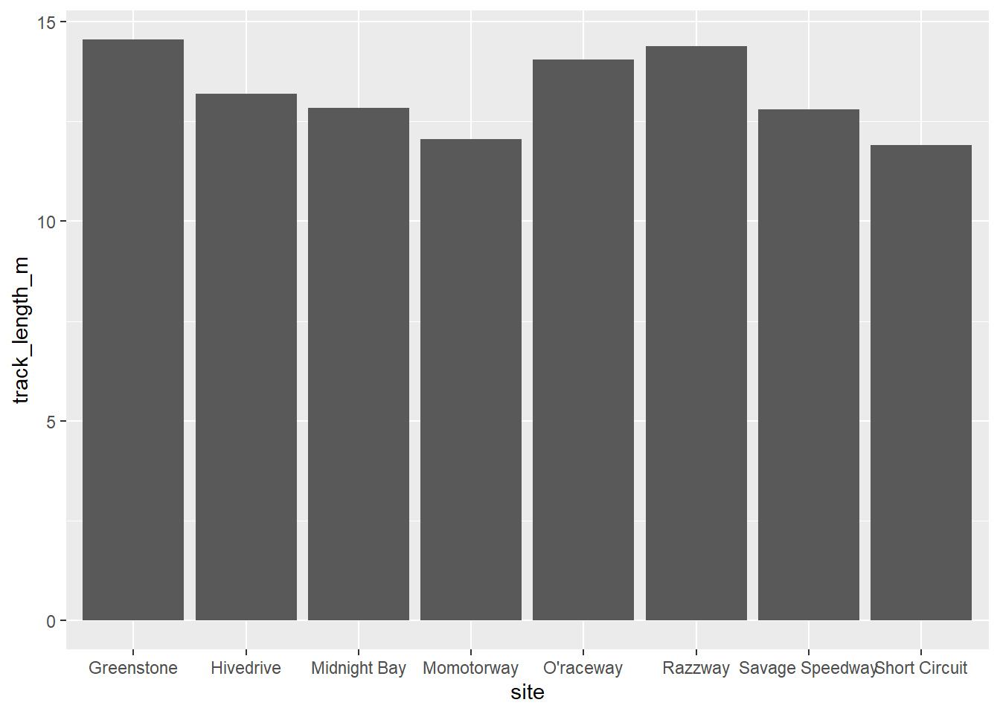
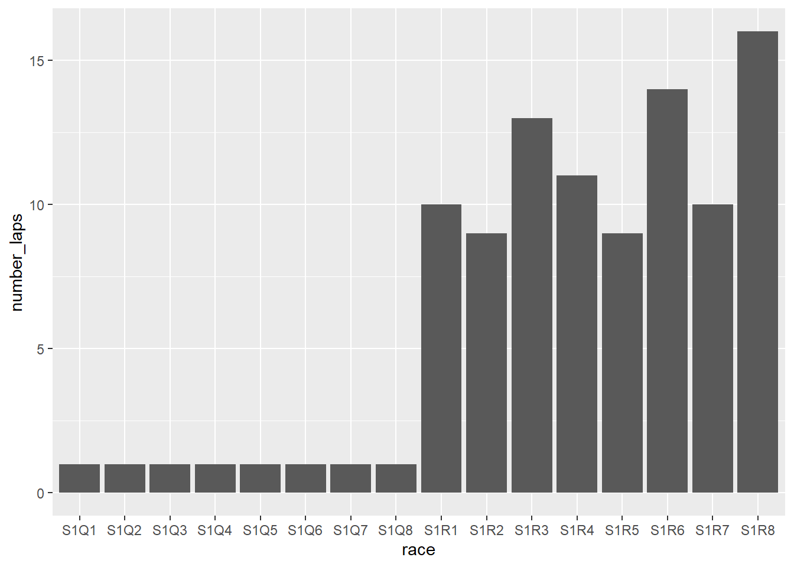
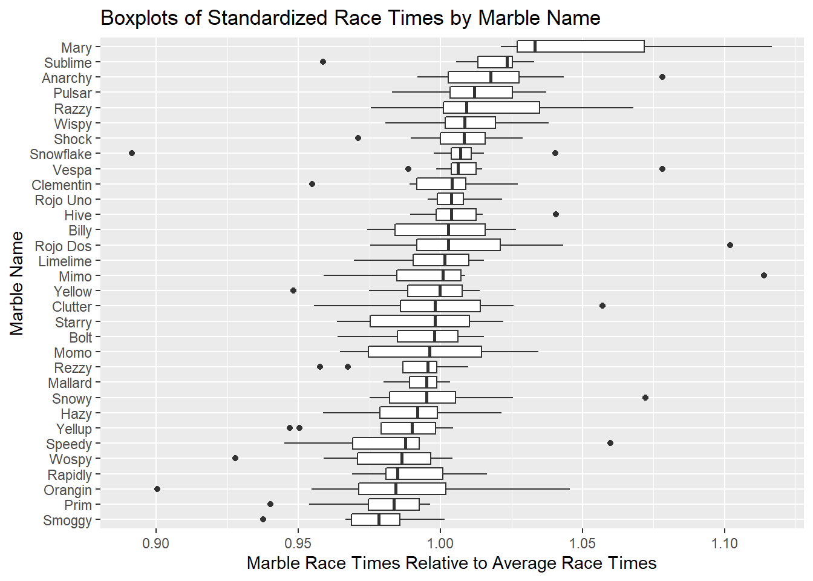
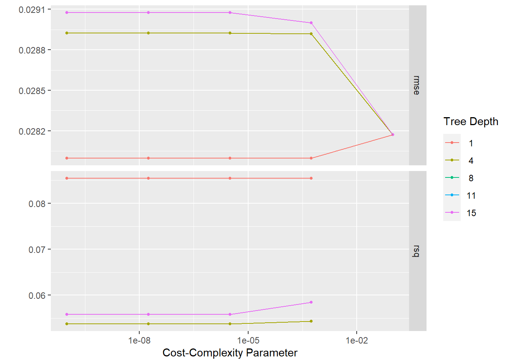
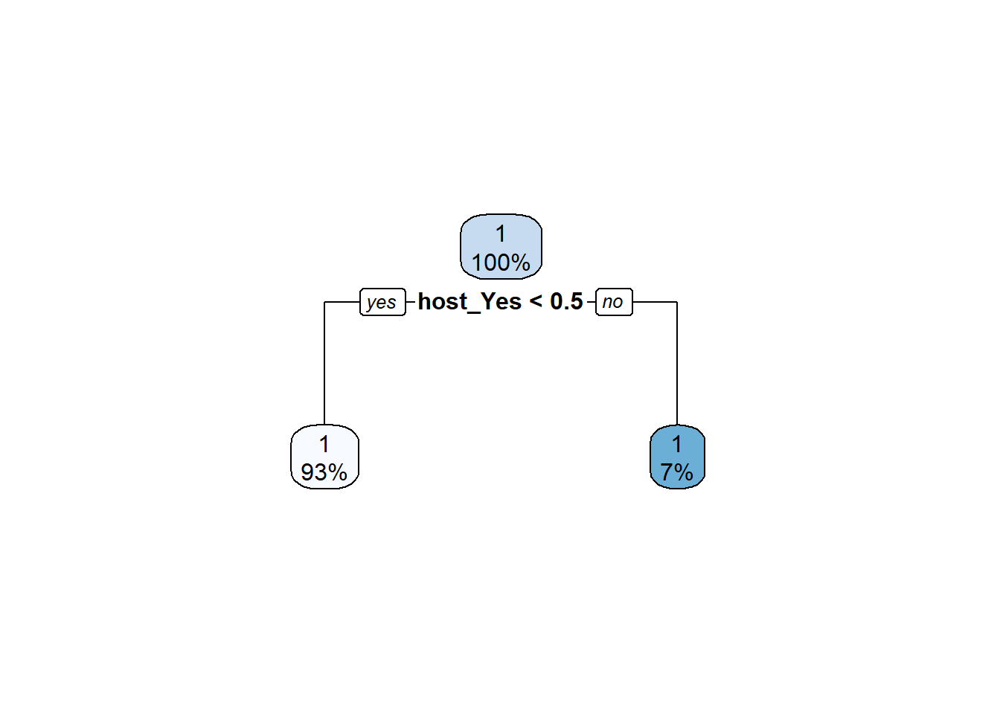
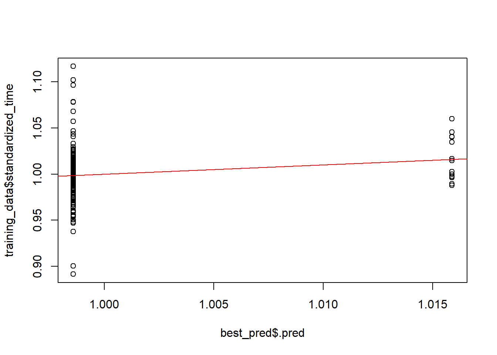
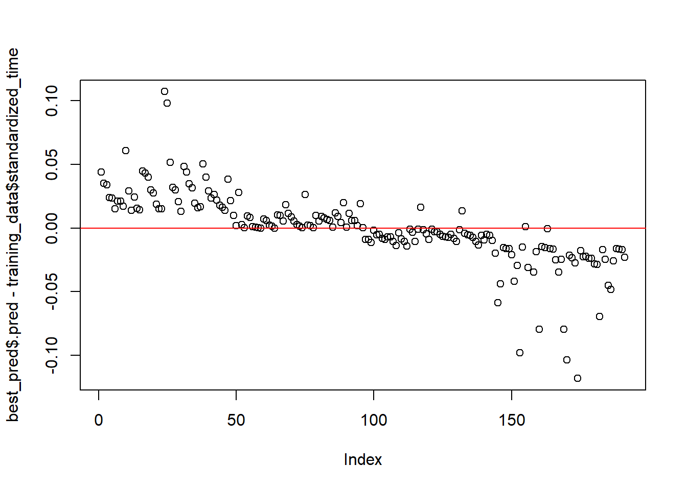
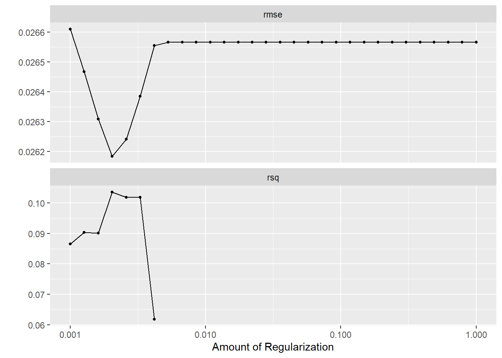
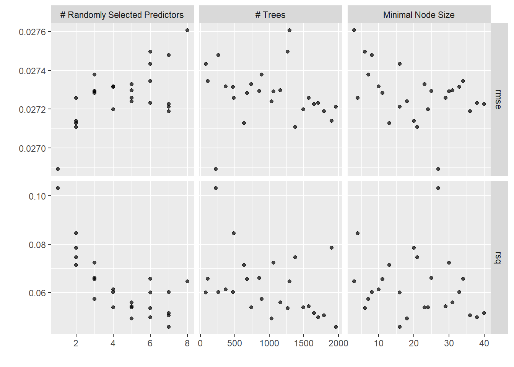

Load the packages
library(tidymodels)
library(tidyverse)
library(ggplot2)
library(skimr)
library(janitor)## Warning: package 'janitor' was built under R version 4.1.1##
## Attaching package: 'janitor'## The following objects are masked from 'package:stats':
##
## chisq.test, fisher.testlibrary(rpart)
library(rpart.plot)Load the data
marbles <- readr::read_csv('https://raw.githubusercontent.com/rfordatascience/tidytuesday/master/data/2020/2020-06-02/marbles.csv')## Rows: 256 Columns: 14## -- Column specification --------------------------------------------------------
## Delimiter: ","
## chr (9): date, race, site, source, marble_name, team_name, pole, host, notes
## dbl (5): time_s, points, track_length_m, number_laps, avg_time_lap##
## i Use `spec()` to retrieve the full column specification for this data.
## i Specify the column types or set `show_col_types = FALSE` to quiet this message.Look at the data Observations: * Date is a character variable; should be date * Host is binary yes/no, character; should be factor * Looks like there are 16 marble teams, 16 races, 32 marble names * Half of the points variable is missing, might want to remove it or impute
glimpse(marbles)## Rows: 256
## Columns: 14
## $ date <chr> "15-Feb-20", "15-Feb-20", "15-Feb-20", "15-Feb-20", "15~
## $ race <chr> "S1Q1", "S1Q1", "S1Q1", "S1Q1", "S1Q1", "S1Q1", "S1Q1",~
## $ site <chr> "Savage Speedway", "Savage Speedway", "Savage Speedway"~
## $ source <chr> "https://youtu.be/JtsQ_UydjEI?t=356", "https://youtu.be~
## $ marble_name <chr> "Clementin", "Starry", "Momo", "Yellow", "Snowy", "Razz~
## $ team_name <chr> "O'rangers", "Team Galactic", "Team Momo", "Mellow Yell~
## $ time_s <dbl> 28.11, 28.37, 28.40, 28.70, 28.71, 28.72, 28.96, 29.11,~
## $ pole <chr> "P1", "P2", "P3", "P4", "P5", "P6", "P7", "P8", "P9", "~
## $ points <dbl> NA, NA, NA, NA, NA, NA, NA, NA, NA, NA, NA, NA, NA, NA,~
## $ track_length_m <dbl> 12.81, 12.81, 12.81, 12.81, 12.81, 12.81, 12.81, 12.81,~
## $ number_laps <dbl> 1, 1, 1, 1, 1, 1, 1, 1, 1, 1, 1, 1, 1, 1, 1, 1, 10, 10,~
## $ avg_time_lap <dbl> 28.11, 28.37, 28.40, 28.70, 28.71, 28.72, 28.96, 29.11,~
## $ host <chr> "No", "No", "No", "No", "No", "No", "No", "No", "No", "~
## $ notes <chr> NA, NA, NA, NA, NA, NA, NA, NA, NA, NA, NA, NA, NA, NA,~summary(marbles)## date race site source
## Length:256 Length:256 Length:256 Length:256
## Class :character Class :character Class :character Class :character
## Mode :character Mode :character Mode :character Mode :character
##
##
##
##
## marble_name team_name time_s pole
## Length:256 Length:256 Min. : 17.76 Length:256
## Class :character Class :character 1st Qu.: 28.40 Class :character
## Mode :character Mode :character Median : 36.28 Mode :character
## Mean :190.84
## 3rd Qu.:338.16
## Max. :492.01
## NA's :3
## points track_length_m number_laps avg_time_lap
## Min. : 0.000 Min. :11.90 Min. : 1.00 Min. :17.76
## 1st Qu.: 0.000 1st Qu.:12.62 1st Qu.: 1.00 1st Qu.:25.94
## Median : 3.000 Median :13.02 Median : 5.00 Median :30.05
## Mean : 6.453 Mean :13.22 Mean : 6.25 Mean :29.70
## 3rd Qu.:11.250 3rd Qu.:14.13 3rd Qu.:10.25 3rd Qu.:33.65
## Max. :26.000 Max. :14.55 Max. :16.00 Max. :41.62
## NA's :128 NA's :3
## host notes
## Length:256 Length:256
## Class :character Class :character
## Mode :character Mode :character
##
##
##
## skim(marbles) #awesome function from skimr package| Name | marbles |
| Number of rows | 256 |
| Number of columns | 14 |
| _______________________ | |
| Column type frequency: | |
| character | 9 |
| numeric | 5 |
| ________________________ | |
| Group variables | None |
Variable type: character
| skim_variable | n_missing | complete_rate | min | max | empty | n_unique | whitespace |
|---|---|---|---|---|---|---|---|
| date | 0 | 1.00 | 8 | 9 | 0 | 16 | 0 |
| race | 0 | 1.00 | 4 | 4 | 0 | 16 | 0 |
| site | 0 | 1.00 | 7 | 15 | 0 | 8 | 0 |
| source | 0 | 1.00 | 34 | 34 | 0 | 16 | 0 |
| marble_name | 0 | 1.00 | 4 | 9 | 0 | 32 | 0 |
| team_name | 0 | 1.00 | 6 | 16 | 0 | 16 | 0 |
| pole | 128 | 0.50 | 2 | 3 | 0 | 16 | 0 |
| host | 0 | 1.00 | 2 | 3 | 0 | 2 | 0 |
| notes | 249 | 0.03 | 37 | 100 | 0 | 7 | 0 |
Variable type: numeric
| skim_variable | n_missing | complete_rate | mean | sd | p0 | p25 | p50 | p75 | p100 | hist |
|---|---|---|---|---|---|---|---|---|---|---|
| time_s | 3 | 0.99 | 190.84 | 169.13 | 17.76 | 28.40 | 36.28 | 338.16 | 492.01 | ▇▁▁▇▁ |
| points | 128 | 0.50 | 6.45 | 7.74 | 0.00 | 0.00 | 3.00 | 11.25 | 26.00 | ▇▂▂▁▁ |
| track_length_m | 0 | 1.00 | 13.22 | 0.95 | 11.90 | 12.62 | 13.02 | 14.13 | 14.55 | ▅▅▂▁▇ |
| number_laps | 0 | 1.00 | 6.25 | 5.53 | 1.00 | 1.00 | 5.00 | 10.25 | 16.00 | ▇▁▃▂▂ |
| avg_time_lap | 3 | 0.99 | 29.70 | 5.55 | 17.76 | 25.94 | 30.05 | 33.65 | 41.62 | ▃▆▇▇▂ |
table(marbles$date, useNA = "ifany") #16 days##
## 1-Mar-20 14-Mar-20 15-Feb-20 15-Mar-20 16-Feb-20 21-Mar-20 22-Feb-20 22-Mar-20
## 16 16 16 16 16 16 16 16
## 23-Feb-20 28-Mar-20 29-Feb-20 29-Mar-20 4-Apr-20 5-Apr-20 7-Mar-20 8-Mar-20
## 16 16 16 16 16 16 16 16table(marbles$site, useNA = "ifany") #8 sites ##
## Greenstone Hivedrive Midnight Bay Momotorway O'raceway
## 32 32 32 32 32
## Razzway Savage Speedway Short Circuit
## 32 32 32table(marbles$track_length_m, useNA = "ifany") #8 track lengths##
## 11.9 12.05 12.81 12.84 13.2 14.05 14.38 14.55
## 32 32 32 32 32 32 32 32table(marbles$race, useNA = "ifany") #16 races##
## S1Q1 S1Q2 S1Q3 S1Q4 S1Q5 S1Q6 S1Q7 S1Q8 S1R1 S1R2 S1R3 S1R4 S1R5 S1R6 S1R7 S1R8
## 16 16 16 16 16 16 16 16 16 16 16 16 16 16 16 16table(marbles$team_name, useNA = "ifany") #16 teams##
## Balls of Chaos Green Ducks Hazers Hornets
## 16 16 16 16
## Limers Mellow Yellow Midnight Wisps O'rangers
## 16 16 16 16
## Raspberry Racers Rojo Rollers Savage Speeders Snowballs
## 16 16 16 16
## Team Galactic Team Momo Team Primary Thunderbolts
## 16 16 16 16table(marbles$number_laps, useNA = "ifany") #7 options##
## 1 9 10 11 13 14 16
## 128 32 32 16 16 16 16Clean the data
marbles_clean <- marbles %>%
janitor::clean_names()
marbles_clean <- marbles %>%
mutate(team_name = as.factor(team_name)) %>%
mutate(host = as.factor(host)) %>%
mutate(site = as.factor(site)) %>%
mutate(date_formatted = as.Date(date, format = "%d-%b-%y"))
marbles_clean %>%
dplyr::select(date_formatted, date) %>%
tail() #check formatted properly## # A tibble: 6 x 2
## date_formatted date
## <date> <chr>
## 1 2020-04-05 5-Apr-20
## 2 2020-04-05 5-Apr-20
## 3 2020-04-05 5-Apr-20
## 4 2020-04-05 5-Apr-20
## 5 2020-04-05 5-Apr-20
## 6 2020-04-05 5-Apr-20Explore the data
#Each site has a different track length, from about 11-15 m
ggplot(data = marbles_clean, aes(x=site, y=track_length_m)) +
geom_bar(position="dodge", stat= "identity")
#Each race has a different number of laps, between 1 and 16
ggplot(data = marbles_clean, aes(x=race, y=number_laps)) +
geom_bar(position="dodge", stat = "identity")
Standarize for comparison across races
#Mean race time by race
average_time_race <- marbles_clean %>%
group_by(race) %>%
summarize(mean_race_time = mean(time_s, na.rm=TRUE))
#Merge this to dataset
marbles_clean_merged <- left_join(marbles_clean, average_time_race, by = "race")
#Divide each marble's race time by average time/race
marbles_clean_merged <- marbles_clean_merged %>%
mutate(standardized_time = time_s/mean_race_time)
#Get median standaridized time per marble across races to order boxplots
new_data <- marbles_clean_merged %>%
group_by(marble_name) %>%
summarize(median_standardized_time = median(standardized_time, na.rm=TRUE))
#Merge back
marbles <- left_join(marbles_clean_merged, new_data)## Joining, by = "marble_name"#Visualize individual race times relative to average race times, ordered by median race time
ggplot(marbles,
aes(x=standardized_time,
y=reorder(marble_name, median_standardized_time))) +
geom_boxplot() +
labs(title= "Boxplots of Standardized Race Times by Marble Name") + ylab("Marble Name") + xlab("Marble Race Times Relative to Average Race Times")## Warning: Removed 3 rows containing non-finite values (stat_boxplot).
How is the standardized marble race time associated with the host of the race?
#Set a seed for reproducibility
set.seed(4595)
#Split data into train and test, set up cross-validation
#Using outcome as stratifier
data_split <- initial_split(marbles, strata = standardized_time)
training_data <- training(data_split)
testing_data <- testing(data_split)
cv_data <- vfold_cv(training_data, strata = standardized_time, av= 5, repeats = 5)
#Recipe
#Code categorical variable as dummy variable
fit_recipe <-
recipe(standardized_time ~ host + site, data = training_data) %>%
step_dummy(all_nominal())Model 1: Null Model
#For a continuous outcome, using RMSE as our performance metric, a null-model that doesn't use any predictor information is one that always just predicts the mean of the data. We'll compute the performance of such a "model" here. It's useful for comparison with the real models. We'll print both numbers here, and then compare with our model results below. Since our performance metric is RMSE, we compute that here with the "model prediction" always just being the mean of the outcomes.
#I have no why I have to put na.rm = TRUE here when there is no missing data
RMSE_null_train <- sqrt(sum( (training_data$standardized_time - mean(training_data$standardized_time, na.rm=TRUE))^2, na.rm=TRUE)/nrow(training_data))
RMSE_null_test <- sqrt(sum( (testing_data$standardized_time - mean(testing_data$standardized_time, na.rm=TRUE))^2, na.rm=TRUE)/nrow(testing_data))
print(RMSE_null_train) #0.028## [1] 0.02848682print(RMSE_null_test) #0.029## [1] 0.02893909Model 2: tree-based model
#Model specification:
tune_spec <- decision_tree(
cost_complexity = tune(),
tree_depth = tune()) %>%
set_engine("rpart") %>%
set_mode("regression")
tune_spec## Decision Tree Model Specification (regression)
##
## Main Arguments:
## cost_complexity = tune()
## tree_depth = tune()
##
## Computational engine: rpart#Tune grid specification:
#grid_regular() from the dials package chooses sensible values to try for each hyperparameter
#grid filled with 25 candidate decision tree models
tree_grid <-
grid_regular(cost_complexity(),
tree_depth(),
levels = 5)
tree_grid## # A tibble: 25 x 2
## cost_complexity tree_depth
## <dbl> <int>
## 1 0.0000000001 1
## 2 0.0000000178 1
## 3 0.00000316 1
## 4 0.000562 1
## 5 0.1 1
## 6 0.0000000001 4
## 7 0.0000000178 4
## 8 0.00000316 4
## 9 0.000562 4
## 10 0.1 4
## # ... with 15 more rows#Workflow definition
#Use tune_grid() to fit models at all the different values we chose for each hyperparameter
#Can these warnings be ignored?
#"A correlation computation is required, but "estimate" is constant nd has 0 standard deviation, resulting in a divide by 0"
tree_wf <- workflow() %>%
add_model(tune_spec) %>%
add_recipe(fit_recipe)
tree_res <- tree_wf %>%
tune_grid(
resamples = cv_data,
grid = tree_grid
) ## ! Fold01, Repeat1: internal: A correlation computation is required, but `estimate` is const...## ! Fold02, Repeat1: internal: A correlation computation is required, but `estimate` is const...## ! Fold03, Repeat1: internal: A correlation computation is required, but `estimate` is const...## ! Fold04, Repeat1: internal: A correlation computation is required, but `estimate` is const...## ! Fold05, Repeat1: internal: A correlation computation is required, but `estimate` is const...## ! Fold06, Repeat1: internal: A correlation computation is required, but `estimate` is const...## ! Fold07, Repeat1: internal: A correlation computation is required, but `estimate` is const...## ! Fold08, Repeat1: internal: A correlation computation is required, but `estimate` is const...## ! Fold09, Repeat1: internal: A correlation computation is required, but `estimate` is const...## ! Fold10, Repeat1: internal: A correlation computation is required, but `estimate` is const...## ! Fold01, Repeat2: internal: A correlation computation is required, but `estimate` is const...## ! Fold02, Repeat2: internal: A correlation computation is required, but `estimate` is const...## ! Fold03, Repeat2: internal: A correlation computation is required, but `estimate` is const...## ! Fold04, Repeat2: internal: A correlation computation is required, but `estimate` is const...## ! Fold05, Repeat2: internal: A correlation computation is required, but `estimate` is const...## ! Fold06, Repeat2: internal: A correlation computation is required, but `estimate` is const...## ! Fold07, Repeat2: internal: A correlation computation is required, but `estimate` is const...## ! Fold08, Repeat2: internal: A correlation computation is required, but `estimate` is const...## ! Fold09, Repeat2: internal: A correlation computation is required, but `estimate` is const...## ! Fold10, Repeat2: internal: A correlation computation is required, but `estimate` is const...## ! Fold01, Repeat3: internal: A correlation computation is required, but `estimate` is const...## ! Fold02, Repeat3: internal: A correlation computation is required, but `estimate` is const...## ! Fold03, Repeat3: internal: A correlation computation is required, but `estimate` is const...## ! Fold04, Repeat3: internal: A correlation computation is required, but `estimate` is const...## ! Fold05, Repeat3: internal: A correlation computation is required, but `estimate` is const...## ! Fold06, Repeat3: internal: A correlation computation is required, but `estimate` is const...## ! Fold07, Repeat3: internal: A correlation computation is required, but `estimate` is const...## ! Fold08, Repeat3: internal: A correlation computation is required, but `estimate` is const...## ! Fold09, Repeat3: internal: A correlation computation is required, but `estimate` is const...## ! Fold10, Repeat3: internal: A correlation computation is required, but `estimate` is const...## ! Fold01, Repeat4: internal: A correlation computation is required, but `estimate` is const...## ! Fold02, Repeat4: internal: A correlation computation is required, but `estimate` is const...## ! Fold03, Repeat4: internal: A correlation computation is required, but `estimate` is const...## ! Fold04, Repeat4: internal: A correlation computation is required, but `estimate` is const...## ! Fold05, Repeat4: internal: A correlation computation is required, but `estimate` is const...## ! Fold06, Repeat4: internal: A correlation computation is required, but `estimate` is const...## ! Fold07, Repeat4: internal: A correlation computation is required, but `estimate` is const...## ! Fold08, Repeat4: internal: A correlation computation is required, but `estimate` is const...## ! Fold09, Repeat4: internal: A correlation computation is required, but `estimate` is const...## ! Fold10, Repeat4: internal: A correlation computation is required, but `estimate` is const...## ! Fold01, Repeat5: internal: A correlation computation is required, but `estimate` is const...## ! Fold02, Repeat5: internal: A correlation computation is required, but `estimate` is const...## ! Fold03, Repeat5: internal: A correlation computation is required, but `estimate` is const...## ! Fold04, Repeat5: internal: A correlation computation is required, but `estimate` is const...## ! Fold05, Repeat5: internal: A correlation computation is required, but `estimate` is const...## ! Fold06, Repeat5: internal: A correlation computation is required, but `estimate` is const...## ! Fold07, Repeat5: internal: A correlation computation is required, but `estimate` is const...## ! Fold08, Repeat5: internal: A correlation computation is required, but `estimate` is const...## ! Fold09, Repeat5: internal: A correlation computation is required, but `estimate` is const...## ! Fold10, Repeat5: internal: A correlation computation is required, but `estimate` is const...Model 2 evaluation
#Plot of performance for different tuning parameters
tree_res %>%
autoplot()
#Get the tuned model that performs best
best_tree <- tree_res %>%
select_best(metric = "rmse")
#Finalize workflow with best model
best_tree_wf <- tree_wf %>%
finalize_workflow(best_tree)
#Fit final model to training data and evaluates finalized model on the testing data
best_tree_fit <- best_tree_wf %>%
last_fit(data_split)
#On training data
best_fit <- best_tree_wf %>%
fit(data = training_data)
best_pred <- predict(best_fit, training_data)
best_tree_fit %>%
collect_metrics() #RMSE = 0.0295## # A tibble: 2 x 4
## .metric .estimator .estimate .config
## <chr> <chr> <dbl> <chr>
## 1 rmse standard 0.0295 Preprocessor1_Model1
## 2 rsq standard 0.00137 Preprocessor1_Model1#ADDING THIS PREDICTOR WAS USELESS--PERFORMS LIKE NULL MODEL
#Plot final tree
rpart.plot(extract_fit_parsnip(best_tree_fit)$fit)## Warning: Cannot retrieve the data used to build the model (so cannot determine roundint and is.binary for the variables).
## To silence this warning:
## Call rpart.plot with roundint=FALSE,
## or rebuild the rpart model with model=TRUE.
#Warning message: Cannot retrieve the data used to build the model (so cannot determine roundint and is.binary for the variables)
#Predicted versus observed
plot(best_pred$.pred,training_data$standardized_time)
abline(a=0,b=1, col = 'red') #45 degree line, along which the results should fall
#UHHHHH, WHATTT?
#Residuals
plot(best_pred$.pred-training_data$standardized_time)
abline(a=0,b=0, col = 'red') #straight line, along which the results should fall
Model 3: LASSO Model
#Model
lasso_model <- linear_reg() %>%
set_mode("regression") %>%
set_engine("glmnet") %>%
set_args(penalty = tune(), mixture = 1) #mixture = 1 means we use the LASSO model
#workflow
lasso_wf <- workflow() %>%
add_model(lasso_model) %>%
add_recipe(fit_recipe)
#tuning grid
lasso_reg_grid <- tibble(penalty = 10^seq(-3, 0, length.out = 30))
#tune model
lasso_tune_res <- lasso_wf %>%
tune_grid(resamples = cv_data,
grid = lasso_reg_grid,
control = control_grid(save_pred = TRUE)
)## x Fold01, Repeat1: preprocessor 1/1, model 1/1: Error in if (nulldev == 0) stop("y is const...## x Fold02, Repeat1: preprocessor 1/1, model 1/1: Error in if (nulldev == 0) stop("y is const...## x Fold03, Repeat1: preprocessor 1/1, model 1/1: Error in if (nulldev == 0) stop("y is const...## x Fold04, Repeat1: preprocessor 1/1, model 1/1: Error in if (nulldev == 0) stop("y is const...## x Fold05, Repeat1: preprocessor 1/1, model 1/1: Error in if (nulldev == 0) stop("y is const...## x Fold06, Repeat1: preprocessor 1/1, model 1/1: Error in if (nulldev == 0) stop("y is const...## ! Fold07, Repeat1: internal: A correlation computation is required, but `estimate` is const...## x Fold08, Repeat1: preprocessor 1/1, model 1/1: Error in if (nulldev == 0) stop("y is const...## x Fold09, Repeat1: preprocessor 1/1, model 1/1: Error in if (nulldev == 0) stop("y is const...## x Fold10, Repeat1: preprocessor 1/1, model 1/1: Error in if (nulldev == 0) stop("y is const...## x Fold01, Repeat2: preprocessor 1/1, model 1/1: Error in if (nulldev == 0) stop("y is const...## x Fold02, Repeat2: preprocessor 1/1, model 1/1: Error in if (nulldev == 0) stop("y is const...## x Fold03, Repeat2: preprocessor 1/1, model 1/1: Error in if (nulldev == 0) stop("y is const...## x Fold04, Repeat2: preprocessor 1/1, model 1/1: Error in if (nulldev == 0) stop("y is const...## x Fold05, Repeat2: preprocessor 1/1, model 1/1: Error in if (nulldev == 0) stop("y is const...## x Fold06, Repeat2: preprocessor 1/1, model 1/1: Error in if (nulldev == 0) stop("y is const...## x Fold07, Repeat2: preprocessor 1/1, model 1/1: Error in if (nulldev == 0) stop("y is const...## x Fold08, Repeat2: preprocessor 1/1, model 1/1: Error in if (nulldev == 0) stop("y is const...## ! Fold09, Repeat2: internal: A correlation computation is required, but `estimate` is const...## x Fold10, Repeat2: preprocessor 1/1, model 1/1: Error in if (nulldev == 0) stop("y is const...## x Fold01, Repeat3: preprocessor 1/1, model 1/1: Error in if (nulldev == 0) stop("y is const...## x Fold02, Repeat3: preprocessor 1/1, model 1/1: Error in if (nulldev == 0) stop("y is const...## x Fold03, Repeat3: preprocessor 1/1, model 1/1: Error in if (nulldev == 0) stop("y is const...## x Fold04, Repeat3: preprocessor 1/1, model 1/1: Error in if (nulldev == 0) stop("y is const...## x Fold05, Repeat3: preprocessor 1/1, model 1/1: Error in if (nulldev == 0) stop("y is const...## ! Fold06, Repeat3: internal: A correlation computation is required, but `estimate` is const...## x Fold07, Repeat3: preprocessor 1/1, model 1/1: Error in if (nulldev == 0) stop("y is const...## x Fold08, Repeat3: preprocessor 1/1, model 1/1: Error in if (nulldev == 0) stop("y is const...## x Fold09, Repeat3: preprocessor 1/1, model 1/1: Error in if (nulldev == 0) stop("y is const...## x Fold10, Repeat3: preprocessor 1/1, model 1/1: Error in if (nulldev == 0) stop("y is const...## x Fold01, Repeat4: preprocessor 1/1, model 1/1: Error in if (nulldev == 0) stop("y is const...## x Fold02, Repeat4: preprocessor 1/1, model 1/1: Error in if (nulldev == 0) stop("y is const...## x Fold03, Repeat4: preprocessor 1/1, model 1/1: Error in if (nulldev == 0) stop("y is const...## ! Fold04, Repeat4: internal: A correlation computation is required, but `estimate` is const...## x Fold05, Repeat4: preprocessor 1/1, model 1/1: Error in if (nulldev == 0) stop("y is const...## x Fold06, Repeat4: preprocessor 1/1, model 1/1: Error in if (nulldev == 0) stop("y is const...## x Fold07, Repeat4: preprocessor 1/1, model 1/1: Error in if (nulldev == 0) stop("y is const...## x Fold08, Repeat4: preprocessor 1/1, model 1/1: Error in if (nulldev == 0) stop("y is const...## x Fold09, Repeat4: preprocessor 1/1, model 1/1: Error in if (nulldev == 0) stop("y is const...## x Fold10, Repeat4: preprocessor 1/1, model 1/1: Error in if (nulldev == 0) stop("y is const...## x Fold01, Repeat5: preprocessor 1/1, model 1/1: Error in if (nulldev == 0) stop("y is const...## x Fold02, Repeat5: preprocessor 1/1, model 1/1: Error in if (nulldev == 0) stop("y is const...## x Fold03, Repeat5: preprocessor 1/1, model 1/1: Error in if (nulldev == 0) stop("y is const...## x Fold04, Repeat5: preprocessor 1/1, model 1/1: Error in if (nulldev == 0) stop("y is const...## x Fold05, Repeat5: preprocessor 1/1, model 1/1: Error in if (nulldev == 0) stop("y is const...## x Fold06, Repeat5: preprocessor 1/1, model 1/1: Error in if (nulldev == 0) stop("y is const...## x Fold07, Repeat5: preprocessor 1/1, model 1/1: Error in if (nulldev == 0) stop("y is const...## x Fold08, Repeat5: preprocessor 1/1, model 1/1: Error in if (nulldev == 0) stop("y is const...## ! Fold09, Repeat5: internal: A correlation computation is required, but `estimate` is const...## x Fold10, Repeat5: preprocessor 1/1, model 1/1: Error in if (nulldev == 0) stop("y is const...Model 3 Evaluation
#All models failed, so added site as a predictor variable
#Many warnings...
#see a plot of performance for different tuning parameters
lasso_tune_res %>% autoplot()
#Get the tuned model that performs best
best_lasso <- lasso_tune_res %>% select_best(metric = "rmse")
# finalize workflow with best model
best_lasso_wf <- lasso_wf %>% finalize_workflow(best_lasso)
lowest_rmse <- lasso_tune_res %>%
select_best("rmse", maximize = FALSE) #ideally, would also choose lowest rmse with highest penalty ## Warning: The `maximize` argument is no longer needed. This value was ignored.# fitting best performing model
final_workflow <-
best_lasso_wf %>%
finalize_workflow(lowest_rmse)
#final_lasso <-
#final_workflow %>%
#fit(data = training_data) #this isn't working and doing last_fit like model 2 gives an error that all models failed. What is going on?
#So, an't do predicted vs. observed and residual plots for this one.Model 4: Random Forest
rf_model <- rand_forest() %>%
set_args(mtry = tune(),
trees = tune(),
min_n = tune()
) %>%
#Select the engine/package that underlies the model
set_engine("ranger",
num.threads = 18, #For some reason for RF, we need to set this in the engine too
importance = "permutation") %>%
# choose either the continuous regression or binary classification mode
set_mode("regression")
#Workflow
rf_wf <- workflow() %>%
add_model(rf_model) %>%
add_recipe(fit_recipe)
#Tuning
rf_res <-
rf_wf %>%
tune_grid(cv_data,
grid = 25, #25 candidate models
control =
control_grid(save_pred = TRUE))## i Creating pre-processing data to finalize unknown parameter: mtry## x Fold01, Repeat1: preprocessor 1/1, model 1/25: Error: Missing data in dependent variable.## x Fold01, Repeat1: preprocessor 1/1, model 2/25: Error: Missing data in dependent variable.## x Fold01, Repeat1: preprocessor 1/1, model 3/25: Error: Missing data in dependent variable.## x Fold01, Repeat1: preprocessor 1/1, model 4/25: Error: Missing data in dependent variable.## x Fold01, Repeat1: preprocessor 1/1, model 5/25: Error: Missing data in dependent variable.## x Fold01, Repeat1: preprocessor 1/1, model 6/25: Error: Missing data in dependent variable.## x Fold01, Repeat1: preprocessor 1/1, model 7/25: Error: Missing data in dependent variable.## x Fold01, Repeat1: preprocessor 1/1, model 8/25: Error: Missing data in dependent variable.## x Fold01, Repeat1: preprocessor 1/1, model 9/25: Error: Missing data in dependent variable.## x Fold01, Repeat1: preprocessor 1/1, model 10/25: Error: Missing data in dependent variable.## x Fold01, Repeat1: preprocessor 1/1, model 11/25: Error: Missing data in dependent variable.## x Fold01, Repeat1: preprocessor 1/1, model 12/25: Error: Missing data in dependent variable.## x Fold01, Repeat1: preprocessor 1/1, model 13/25: Error: Missing data in dependent variable.## x Fold01, Repeat1: preprocessor 1/1, model 14/25: Error: Missing data in dependent variable.## x Fold01, Repeat1: preprocessor 1/1, model 15/25: Error: Missing data in dependent variable.## x Fold01, Repeat1: preprocessor 1/1, model 16/25: Error: Missing data in dependent variable.## x Fold01, Repeat1: preprocessor 1/1, model 17/25: Error: Missing data in dependent variable.## x Fold01, Repeat1: preprocessor 1/1, model 18/25: Error: Missing data in dependent variable.## x Fold01, Repeat1: preprocessor 1/1, model 19/25: Error: Missing data in dependent variable.## x Fold01, Repeat1: preprocessor 1/1, model 20/25: Error: Missing data in dependent variable.## x Fold01, Repeat1: preprocessor 1/1, model 21/25: Error: Missing data in dependent variable.## x Fold01, Repeat1: preprocessor 1/1, model 22/25: Error: Missing data in dependent variable.## x Fold01, Repeat1: preprocessor 1/1, model 23/25: Error: Missing data in dependent variable.## x Fold01, Repeat1: preprocessor 1/1, model 24/25: Error: Missing data in dependent variable.## x Fold01, Repeat1: preprocessor 1/1, model 25/25: Error: Missing data in dependent variable.## x Fold02, Repeat1: preprocessor 1/1, model 1/25: Error: Missing data in dependent variable.## x Fold02, Repeat1: preprocessor 1/1, model 2/25: Error: Missing data in dependent variable.## x Fold02, Repeat1: preprocessor 1/1, model 3/25: Error: Missing data in dependent variable.## x Fold02, Repeat1: preprocessor 1/1, model 4/25: Error: Missing data in dependent variable.## x Fold02, Repeat1: preprocessor 1/1, model 5/25: Error: Missing data in dependent variable.## x Fold02, Repeat1: preprocessor 1/1, model 6/25: Error: Missing data in dependent variable.## x Fold02, Repeat1: preprocessor 1/1, model 7/25: Error: Missing data in dependent variable.## x Fold02, Repeat1: preprocessor 1/1, model 8/25: Error: Missing data in dependent variable.## x Fold02, Repeat1: preprocessor 1/1, model 9/25: Error: Missing data in dependent variable.## x Fold02, Repeat1: preprocessor 1/1, model 10/25: Error: Missing data in dependent variable.## x Fold02, Repeat1: preprocessor 1/1, model 11/25: Error: Missing data in dependent variable.## x Fold02, Repeat1: preprocessor 1/1, model 12/25: Error: Missing data in dependent variable.## x Fold02, Repeat1: preprocessor 1/1, model 13/25: Error: Missing data in dependent variable.## x Fold02, Repeat1: preprocessor 1/1, model 14/25: Error: Missing data in dependent variable.## x Fold02, Repeat1: preprocessor 1/1, model 15/25: Error: Missing data in dependent variable.## x Fold02, Repeat1: preprocessor 1/1, model 16/25: Error: Missing data in dependent variable.## x Fold02, Repeat1: preprocessor 1/1, model 17/25: Error: Missing data in dependent variable.## x Fold02, Repeat1: preprocessor 1/1, model 18/25: Error: Missing data in dependent variable.## x Fold02, Repeat1: preprocessor 1/1, model 19/25: Error: Missing data in dependent variable.## x Fold02, Repeat1: preprocessor 1/1, model 20/25: Error: Missing data in dependent variable.## x Fold02, Repeat1: preprocessor 1/1, model 21/25: Error: Missing data in dependent variable.## x Fold02, Repeat1: preprocessor 1/1, model 22/25: Error: Missing data in dependent variable.## x Fold02, Repeat1: preprocessor 1/1, model 23/25: Error: Missing data in dependent variable.## x Fold02, Repeat1: preprocessor 1/1, model 24/25: Error: Missing data in dependent variable.## x Fold02, Repeat1: preprocessor 1/1, model 25/25: Error: Missing data in dependent variable.## x Fold03, Repeat1: preprocessor 1/1, model 1/25: Error: Missing data in dependent variable.## x Fold03, Repeat1: preprocessor 1/1, model 2/25: Error: Missing data in dependent variable.## x Fold03, Repeat1: preprocessor 1/1, model 3/25: Error: Missing data in dependent variable.## x Fold03, Repeat1: preprocessor 1/1, model 4/25: Error: Missing data in dependent variable.## x Fold03, Repeat1: preprocessor 1/1, model 5/25: Error: Missing data in dependent variable.## x Fold03, Repeat1: preprocessor 1/1, model 6/25: Error: Missing data in dependent variable.## x Fold03, Repeat1: preprocessor 1/1, model 7/25: Error: Missing data in dependent variable.## x Fold03, Repeat1: preprocessor 1/1, model 8/25: Error: Missing data in dependent variable.## x Fold03, Repeat1: preprocessor 1/1, model 9/25: Error: Missing data in dependent variable.## x Fold03, Repeat1: preprocessor 1/1, model 10/25: Error: Missing data in dependent variable.## x Fold03, Repeat1: preprocessor 1/1, model 11/25: Error: Missing data in dependent variable.## x Fold03, Repeat1: preprocessor 1/1, model 12/25: Error: Missing data in dependent variable.## x Fold03, Repeat1: preprocessor 1/1, model 13/25: Error: Missing data in dependent variable.## x Fold03, Repeat1: preprocessor 1/1, model 14/25: Error: Missing data in dependent variable.## x Fold03, Repeat1: preprocessor 1/1, model 15/25: Error: Missing data in dependent variable.## x Fold03, Repeat1: preprocessor 1/1, model 16/25: Error: Missing data in dependent variable.## x Fold03, Repeat1: preprocessor 1/1, model 17/25: Error: Missing data in dependent variable.## x Fold03, Repeat1: preprocessor 1/1, model 18/25: Error: Missing data in dependent variable.## x Fold03, Repeat1: preprocessor 1/1, model 19/25: Error: Missing data in dependent variable.## x Fold03, Repeat1: preprocessor 1/1, model 20/25: Error: Missing data in dependent variable.## x Fold03, Repeat1: preprocessor 1/1, model 21/25: Error: Missing data in dependent variable.## x Fold03, Repeat1: preprocessor 1/1, model 22/25: Error: Missing data in dependent variable.## x Fold03, Repeat1: preprocessor 1/1, model 23/25: Error: Missing data in dependent variable.## x Fold03, Repeat1: preprocessor 1/1, model 24/25: Error: Missing data in dependent variable.## x Fold03, Repeat1: preprocessor 1/1, model 25/25: Error: Missing data in dependent variable.## x Fold04, Repeat1: preprocessor 1/1, model 1/25: Error: Missing data in dependent variable.## x Fold04, Repeat1: preprocessor 1/1, model 2/25: Error: Missing data in dependent variable.## x Fold04, Repeat1: preprocessor 1/1, model 3/25: Error: Missing data in dependent variable.## x Fold04, Repeat1: preprocessor 1/1, model 4/25: Error: Missing data in dependent variable.## x Fold04, Repeat1: preprocessor 1/1, model 5/25: Error: Missing data in dependent variable.## x Fold04, Repeat1: preprocessor 1/1, model 6/25: Error: Missing data in dependent variable.## x Fold04, Repeat1: preprocessor 1/1, model 7/25: Error: Missing data in dependent variable.## x Fold04, Repeat1: preprocessor 1/1, model 8/25: Error: Missing data in dependent variable.## x Fold04, Repeat1: preprocessor 1/1, model 9/25: Error: Missing data in dependent variable.## x Fold04, Repeat1: preprocessor 1/1, model 10/25: Error: Missing data in dependent variable.## x Fold04, Repeat1: preprocessor 1/1, model 11/25: Error: Missing data in dependent variable.## x Fold04, Repeat1: preprocessor 1/1, model 12/25: Error: Missing data in dependent variable.## x Fold04, Repeat1: preprocessor 1/1, model 13/25: Error: Missing data in dependent variable.## x Fold04, Repeat1: preprocessor 1/1, model 14/25: Error: Missing data in dependent variable.## x Fold04, Repeat1: preprocessor 1/1, model 15/25: Error: Missing data in dependent variable.## x Fold04, Repeat1: preprocessor 1/1, model 16/25: Error: Missing data in dependent variable.## x Fold04, Repeat1: preprocessor 1/1, model 17/25: Error: Missing data in dependent variable.## x Fold04, Repeat1: preprocessor 1/1, model 18/25: Error: Missing data in dependent variable.## x Fold04, Repeat1: preprocessor 1/1, model 19/25: Error: Missing data in dependent variable.## x Fold04, Repeat1: preprocessor 1/1, model 20/25: Error: Missing data in dependent variable.## x Fold04, Repeat1: preprocessor 1/1, model 21/25: Error: Missing data in dependent variable.## x Fold04, Repeat1: preprocessor 1/1, model 22/25: Error: Missing data in dependent variable.## x Fold04, Repeat1: preprocessor 1/1, model 23/25: Error: Missing data in dependent variable.## x Fold04, Repeat1: preprocessor 1/1, model 24/25: Error: Missing data in dependent variable.## x Fold04, Repeat1: preprocessor 1/1, model 25/25: Error: Missing data in dependent variable.## x Fold05, Repeat1: preprocessor 1/1, model 1/25: Error: Missing data in dependent variable.## x Fold05, Repeat1: preprocessor 1/1, model 2/25: Error: Missing data in dependent variable.## x Fold05, Repeat1: preprocessor 1/1, model 3/25: Error: Missing data in dependent variable.## x Fold05, Repeat1: preprocessor 1/1, model 4/25: Error: Missing data in dependent variable.## x Fold05, Repeat1: preprocessor 1/1, model 5/25: Error: Missing data in dependent variable.## x Fold05, Repeat1: preprocessor 1/1, model 6/25: Error: Missing data in dependent variable.## x Fold05, Repeat1: preprocessor 1/1, model 7/25: Error: Missing data in dependent variable.## x Fold05, Repeat1: preprocessor 1/1, model 8/25: Error: Missing data in dependent variable.## x Fold05, Repeat1: preprocessor 1/1, model 9/25: Error: Missing data in dependent variable.## x Fold05, Repeat1: preprocessor 1/1, model 10/25: Error: Missing data in dependent variable.## x Fold05, Repeat1: preprocessor 1/1, model 11/25: Error: Missing data in dependent variable.## x Fold05, Repeat1: preprocessor 1/1, model 12/25: Error: Missing data in dependent variable.## x Fold05, Repeat1: preprocessor 1/1, model 13/25: Error: Missing data in dependent variable.## x Fold05, Repeat1: preprocessor 1/1, model 14/25: Error: Missing data in dependent variable.## x Fold05, Repeat1: preprocessor 1/1, model 15/25: Error: Missing data in dependent variable.## x Fold05, Repeat1: preprocessor 1/1, model 16/25: Error: Missing data in dependent variable.## x Fold05, Repeat1: preprocessor 1/1, model 17/25: Error: Missing data in dependent variable.## x Fold05, Repeat1: preprocessor 1/1, model 18/25: Error: Missing data in dependent variable.## x Fold05, Repeat1: preprocessor 1/1, model 19/25: Error: Missing data in dependent variable.## x Fold05, Repeat1: preprocessor 1/1, model 20/25: Error: Missing data in dependent variable.## x Fold05, Repeat1: preprocessor 1/1, model 21/25: Error: Missing data in dependent variable.## x Fold05, Repeat1: preprocessor 1/1, model 22/25: Error: Missing data in dependent variable.## x Fold05, Repeat1: preprocessor 1/1, model 23/25: Error: Missing data in dependent variable.## x Fold05, Repeat1: preprocessor 1/1, model 24/25: Error: Missing data in dependent variable.## x Fold05, Repeat1: preprocessor 1/1, model 25/25: Error: Missing data in dependent variable.## x Fold06, Repeat1: preprocessor 1/1, model 1/25: Error: Missing data in dependent variable.## x Fold06, Repeat1: preprocessor 1/1, model 2/25: Error: Missing data in dependent variable.## x Fold06, Repeat1: preprocessor 1/1, model 3/25: Error: Missing data in dependent variable.## x Fold06, Repeat1: preprocessor 1/1, model 4/25: Error: Missing data in dependent variable.## x Fold06, Repeat1: preprocessor 1/1, model 5/25: Error: Missing data in dependent variable.## x Fold06, Repeat1: preprocessor 1/1, model 6/25: Error: Missing data in dependent variable.## x Fold06, Repeat1: preprocessor 1/1, model 7/25: Error: Missing data in dependent variable.## x Fold06, Repeat1: preprocessor 1/1, model 8/25: Error: Missing data in dependent variable.## x Fold06, Repeat1: preprocessor 1/1, model 9/25: Error: Missing data in dependent variable.## x Fold06, Repeat1: preprocessor 1/1, model 10/25: Error: Missing data in dependent variable.## x Fold06, Repeat1: preprocessor 1/1, model 11/25: Error: Missing data in dependent variable.## x Fold06, Repeat1: preprocessor 1/1, model 12/25: Error: Missing data in dependent variable.## x Fold06, Repeat1: preprocessor 1/1, model 13/25: Error: Missing data in dependent variable.## x Fold06, Repeat1: preprocessor 1/1, model 14/25: Error: Missing data in dependent variable.## x Fold06, Repeat1: preprocessor 1/1, model 15/25: Error: Missing data in dependent variable.## x Fold06, Repeat1: preprocessor 1/1, model 16/25: Error: Missing data in dependent variable.## x Fold06, Repeat1: preprocessor 1/1, model 17/25: Error: Missing data in dependent variable.## x Fold06, Repeat1: preprocessor 1/1, model 18/25: Error: Missing data in dependent variable.## x Fold06, Repeat1: preprocessor 1/1, model 19/25: Error: Missing data in dependent variable.## x Fold06, Repeat1: preprocessor 1/1, model 20/25: Error: Missing data in dependent variable.## x Fold06, Repeat1: preprocessor 1/1, model 21/25: Error: Missing data in dependent variable.## x Fold06, Repeat1: preprocessor 1/1, model 22/25: Error: Missing data in dependent variable.## x Fold06, Repeat1: preprocessor 1/1, model 23/25: Error: Missing data in dependent variable.## x Fold06, Repeat1: preprocessor 1/1, model 24/25: Error: Missing data in dependent variable.## x Fold06, Repeat1: preprocessor 1/1, model 25/25: Error: Missing data in dependent variable.## x Fold08, Repeat1: preprocessor 1/1, model 1/25: Error: Missing data in dependent variable.## x Fold08, Repeat1: preprocessor 1/1, model 2/25: Error: Missing data in dependent variable.## x Fold08, Repeat1: preprocessor 1/1, model 3/25: Error: Missing data in dependent variable.## x Fold08, Repeat1: preprocessor 1/1, model 4/25: Error: Missing data in dependent variable.## x Fold08, Repeat1: preprocessor 1/1, model 5/25: Error: Missing data in dependent variable.## x Fold08, Repeat1: preprocessor 1/1, model 6/25: Error: Missing data in dependent variable.## x Fold08, Repeat1: preprocessor 1/1, model 7/25: Error: Missing data in dependent variable.## x Fold08, Repeat1: preprocessor 1/1, model 8/25: Error: Missing data in dependent variable.## x Fold08, Repeat1: preprocessor 1/1, model 9/25: Error: Missing data in dependent variable.## x Fold08, Repeat1: preprocessor 1/1, model 10/25: Error: Missing data in dependent variable.## x Fold08, Repeat1: preprocessor 1/1, model 11/25: Error: Missing data in dependent variable.## x Fold08, Repeat1: preprocessor 1/1, model 12/25: Error: Missing data in dependent variable.## x Fold08, Repeat1: preprocessor 1/1, model 13/25: Error: Missing data in dependent variable.## x Fold08, Repeat1: preprocessor 1/1, model 14/25: Error: Missing data in dependent variable.## x Fold08, Repeat1: preprocessor 1/1, model 15/25: Error: Missing data in dependent variable.## x Fold08, Repeat1: preprocessor 1/1, model 16/25: Error: Missing data in dependent variable.## x Fold08, Repeat1: preprocessor 1/1, model 17/25: Error: Missing data in dependent variable.## x Fold08, Repeat1: preprocessor 1/1, model 18/25: Error: Missing data in dependent variable.## x Fold08, Repeat1: preprocessor 1/1, model 19/25: Error: Missing data in dependent variable.## x Fold08, Repeat1: preprocessor 1/1, model 20/25: Error: Missing data in dependent variable.## x Fold08, Repeat1: preprocessor 1/1, model 21/25: Error: Missing data in dependent variable.## x Fold08, Repeat1: preprocessor 1/1, model 22/25: Error: Missing data in dependent variable.## x Fold08, Repeat1: preprocessor 1/1, model 23/25: Error: Missing data in dependent variable.## x Fold08, Repeat1: preprocessor 1/1, model 24/25: Error: Missing data in dependent variable.## x Fold08, Repeat1: preprocessor 1/1, model 25/25: Error: Missing data in dependent variable.## x Fold09, Repeat1: preprocessor 1/1, model 1/25: Error: Missing data in dependent variable.## x Fold09, Repeat1: preprocessor 1/1, model 2/25: Error: Missing data in dependent variable.## x Fold09, Repeat1: preprocessor 1/1, model 3/25: Error: Missing data in dependent variable.## x Fold09, Repeat1: preprocessor 1/1, model 4/25: Error: Missing data in dependent variable.## x Fold09, Repeat1: preprocessor 1/1, model 5/25: Error: Missing data in dependent variable.## x Fold09, Repeat1: preprocessor 1/1, model 6/25: Error: Missing data in dependent variable.## x Fold09, Repeat1: preprocessor 1/1, model 7/25: Error: Missing data in dependent variable.## x Fold09, Repeat1: preprocessor 1/1, model 8/25: Error: Missing data in dependent variable.## x Fold09, Repeat1: preprocessor 1/1, model 9/25: Error: Missing data in dependent variable.## x Fold09, Repeat1: preprocessor 1/1, model 10/25: Error: Missing data in dependent variable.## x Fold09, Repeat1: preprocessor 1/1, model 11/25: Error: Missing data in dependent variable.## x Fold09, Repeat1: preprocessor 1/1, model 12/25: Error: Missing data in dependent variable.## x Fold09, Repeat1: preprocessor 1/1, model 13/25: Error: Missing data in dependent variable.## x Fold09, Repeat1: preprocessor 1/1, model 14/25: Error: Missing data in dependent variable.## x Fold09, Repeat1: preprocessor 1/1, model 15/25: Error: Missing data in dependent variable.## x Fold09, Repeat1: preprocessor 1/1, model 16/25: Error: Missing data in dependent variable.## x Fold09, Repeat1: preprocessor 1/1, model 17/25: Error: Missing data in dependent variable.## x Fold09, Repeat1: preprocessor 1/1, model 18/25: Error: Missing data in dependent variable.## x Fold09, Repeat1: preprocessor 1/1, model 19/25: Error: Missing data in dependent variable.## x Fold09, Repeat1: preprocessor 1/1, model 20/25: Error: Missing data in dependent variable.## x Fold09, Repeat1: preprocessor 1/1, model 21/25: Error: Missing data in dependent variable.## x Fold09, Repeat1: preprocessor 1/1, model 22/25: Error: Missing data in dependent variable.## x Fold09, Repeat1: preprocessor 1/1, model 23/25: Error: Missing data in dependent variable.## x Fold09, Repeat1: preprocessor 1/1, model 24/25: Error: Missing data in dependent variable.## x Fold09, Repeat1: preprocessor 1/1, model 25/25: Error: Missing data in dependent variable.## x Fold10, Repeat1: preprocessor 1/1, model 1/25: Error: Missing data in dependent variable.## x Fold10, Repeat1: preprocessor 1/1, model 2/25: Error: Missing data in dependent variable.## x Fold10, Repeat1: preprocessor 1/1, model 3/25: Error: Missing data in dependent variable.## x Fold10, Repeat1: preprocessor 1/1, model 4/25: Error: Missing data in dependent variable.## x Fold10, Repeat1: preprocessor 1/1, model 5/25: Error: Missing data in dependent variable.## x Fold10, Repeat1: preprocessor 1/1, model 6/25: Error: Missing data in dependent variable.## x Fold10, Repeat1: preprocessor 1/1, model 7/25: Error: Missing data in dependent variable.## x Fold10, Repeat1: preprocessor 1/1, model 8/25: Error: Missing data in dependent variable.## x Fold10, Repeat1: preprocessor 1/1, model 9/25: Error: Missing data in dependent variable.## x Fold10, Repeat1: preprocessor 1/1, model 10/25: Error: Missing data in dependent variable.## x Fold10, Repeat1: preprocessor 1/1, model 11/25: Error: Missing data in dependent variable.## x Fold10, Repeat1: preprocessor 1/1, model 12/25: Error: Missing data in dependent variable.## x Fold10, Repeat1: preprocessor 1/1, model 13/25: Error: Missing data in dependent variable.## x Fold10, Repeat1: preprocessor 1/1, model 14/25: Error: Missing data in dependent variable.## x Fold10, Repeat1: preprocessor 1/1, model 15/25: Error: Missing data in dependent variable.## x Fold10, Repeat1: preprocessor 1/1, model 16/25: Error: Missing data in dependent variable.## x Fold10, Repeat1: preprocessor 1/1, model 17/25: Error: Missing data in dependent variable.## x Fold10, Repeat1: preprocessor 1/1, model 18/25: Error: Missing data in dependent variable.## x Fold10, Repeat1: preprocessor 1/1, model 19/25: Error: Missing data in dependent variable.## x Fold10, Repeat1: preprocessor 1/1, model 20/25: Error: Missing data in dependent variable.## x Fold10, Repeat1: preprocessor 1/1, model 21/25: Error: Missing data in dependent variable.## x Fold10, Repeat1: preprocessor 1/1, model 22/25: Error: Missing data in dependent variable.## x Fold10, Repeat1: preprocessor 1/1, model 23/25: Error: Missing data in dependent variable.## x Fold10, Repeat1: preprocessor 1/1, model 24/25: Error: Missing data in dependent variable.## x Fold10, Repeat1: preprocessor 1/1, model 25/25: Error: Missing data in dependent variable.## x Fold01, Repeat2: preprocessor 1/1, model 1/25: Error: Missing data in dependent variable.## x Fold01, Repeat2: preprocessor 1/1, model 2/25: Error: Missing data in dependent variable.## x Fold01, Repeat2: preprocessor 1/1, model 3/25: Error: Missing data in dependent variable.## x Fold01, Repeat2: preprocessor 1/1, model 4/25: Error: Missing data in dependent variable.## x Fold01, Repeat2: preprocessor 1/1, model 5/25: Error: Missing data in dependent variable.## x Fold01, Repeat2: preprocessor 1/1, model 6/25: Error: Missing data in dependent variable.## x Fold01, Repeat2: preprocessor 1/1, model 7/25: Error: Missing data in dependent variable.## x Fold01, Repeat2: preprocessor 1/1, model 8/25: Error: Missing data in dependent variable.## x Fold01, Repeat2: preprocessor 1/1, model 9/25: Error: Missing data in dependent variable.## x Fold01, Repeat2: preprocessor 1/1, model 10/25: Error: Missing data in dependent variable.## x Fold01, Repeat2: preprocessor 1/1, model 11/25: Error: Missing data in dependent variable.## x Fold01, Repeat2: preprocessor 1/1, model 12/25: Error: Missing data in dependent variable.## x Fold01, Repeat2: preprocessor 1/1, model 13/25: Error: Missing data in dependent variable.## x Fold01, Repeat2: preprocessor 1/1, model 14/25: Error: Missing data in dependent variable.## x Fold01, Repeat2: preprocessor 1/1, model 15/25: Error: Missing data in dependent variable.## x Fold01, Repeat2: preprocessor 1/1, model 16/25: Error: Missing data in dependent variable.## x Fold01, Repeat2: preprocessor 1/1, model 17/25: Error: Missing data in dependent variable.## x Fold01, Repeat2: preprocessor 1/1, model 18/25: Error: Missing data in dependent variable.## x Fold01, Repeat2: preprocessor 1/1, model 19/25: Error: Missing data in dependent variable.## x Fold01, Repeat2: preprocessor 1/1, model 20/25: Error: Missing data in dependent variable.## x Fold01, Repeat2: preprocessor 1/1, model 21/25: Error: Missing data in dependent variable.## x Fold01, Repeat2: preprocessor 1/1, model 22/25: Error: Missing data in dependent variable.## x Fold01, Repeat2: preprocessor 1/1, model 23/25: Error: Missing data in dependent variable.## x Fold01, Repeat2: preprocessor 1/1, model 24/25: Error: Missing data in dependent variable.## x Fold01, Repeat2: preprocessor 1/1, model 25/25: Error: Missing data in dependent variable.## x Fold02, Repeat2: preprocessor 1/1, model 1/25: Error: Missing data in dependent variable.## x Fold02, Repeat2: preprocessor 1/1, model 2/25: Error: Missing data in dependent variable.## x Fold02, Repeat2: preprocessor 1/1, model 3/25: Error: Missing data in dependent variable.## x Fold02, Repeat2: preprocessor 1/1, model 4/25: Error: Missing data in dependent variable.## x Fold02, Repeat2: preprocessor 1/1, model 5/25: Error: Missing data in dependent variable.## x Fold02, Repeat2: preprocessor 1/1, model 6/25: Error: Missing data in dependent variable.## x Fold02, Repeat2: preprocessor 1/1, model 7/25: Error: Missing data in dependent variable.## x Fold02, Repeat2: preprocessor 1/1, model 8/25: Error: Missing data in dependent variable.## x Fold02, Repeat2: preprocessor 1/1, model 9/25: Error: Missing data in dependent variable.## x Fold02, Repeat2: preprocessor 1/1, model 10/25: Error: Missing data in dependent variable.## x Fold02, Repeat2: preprocessor 1/1, model 11/25: Error: Missing data in dependent variable.## x Fold02, Repeat2: preprocessor 1/1, model 12/25: Error: Missing data in dependent variable.## x Fold02, Repeat2: preprocessor 1/1, model 13/25: Error: Missing data in dependent variable.## x Fold02, Repeat2: preprocessor 1/1, model 14/25: Error: Missing data in dependent variable.## x Fold02, Repeat2: preprocessor 1/1, model 15/25: Error: Missing data in dependent variable.## x Fold02, Repeat2: preprocessor 1/1, model 16/25: Error: Missing data in dependent variable.## x Fold02, Repeat2: preprocessor 1/1, model 17/25: Error: Missing data in dependent variable.## x Fold02, Repeat2: preprocessor 1/1, model 18/25: Error: Missing data in dependent variable.## x Fold02, Repeat2: preprocessor 1/1, model 19/25: Error: Missing data in dependent variable.## x Fold02, Repeat2: preprocessor 1/1, model 20/25: Error: Missing data in dependent variable.## x Fold02, Repeat2: preprocessor 1/1, model 21/25: Error: Missing data in dependent variable.## x Fold02, Repeat2: preprocessor 1/1, model 22/25: Error: Missing data in dependent variable.## x Fold02, Repeat2: preprocessor 1/1, model 23/25: Error: Missing data in dependent variable.## x Fold02, Repeat2: preprocessor 1/1, model 24/25: Error: Missing data in dependent variable.## x Fold02, Repeat2: preprocessor 1/1, model 25/25: Error: Missing data in dependent variable.## x Fold03, Repeat2: preprocessor 1/1, model 1/25: Error: Missing data in dependent variable.## x Fold03, Repeat2: preprocessor 1/1, model 2/25: Error: Missing data in dependent variable.## x Fold03, Repeat2: preprocessor 1/1, model 3/25: Error: Missing data in dependent variable.## x Fold03, Repeat2: preprocessor 1/1, model 4/25: Error: Missing data in dependent variable.## x Fold03, Repeat2: preprocessor 1/1, model 5/25: Error: Missing data in dependent variable.## x Fold03, Repeat2: preprocessor 1/1, model 6/25: Error: Missing data in dependent variable.## x Fold03, Repeat2: preprocessor 1/1, model 7/25: Error: Missing data in dependent variable.## x Fold03, Repeat2: preprocessor 1/1, model 8/25: Error: Missing data in dependent variable.## x Fold03, Repeat2: preprocessor 1/1, model 9/25: Error: Missing data in dependent variable.## x Fold03, Repeat2: preprocessor 1/1, model 10/25: Error: Missing data in dependent variable.## x Fold03, Repeat2: preprocessor 1/1, model 11/25: Error: Missing data in dependent variable.## x Fold03, Repeat2: preprocessor 1/1, model 12/25: Error: Missing data in dependent variable.## x Fold03, Repeat2: preprocessor 1/1, model 13/25: Error: Missing data in dependent variable.## x Fold03, Repeat2: preprocessor 1/1, model 14/25: Error: Missing data in dependent variable.## x Fold03, Repeat2: preprocessor 1/1, model 15/25: Error: Missing data in dependent variable.## x Fold03, Repeat2: preprocessor 1/1, model 16/25: Error: Missing data in dependent variable.## x Fold03, Repeat2: preprocessor 1/1, model 17/25: Error: Missing data in dependent variable.## x Fold03, Repeat2: preprocessor 1/1, model 18/25: Error: Missing data in dependent variable.## x Fold03, Repeat2: preprocessor 1/1, model 19/25: Error: Missing data in dependent variable.## x Fold03, Repeat2: preprocessor 1/1, model 20/25: Error: Missing data in dependent variable.## x Fold03, Repeat2: preprocessor 1/1, model 21/25: Error: Missing data in dependent variable.## x Fold03, Repeat2: preprocessor 1/1, model 22/25: Error: Missing data in dependent variable.## x Fold03, Repeat2: preprocessor 1/1, model 23/25: Error: Missing data in dependent variable.## x Fold03, Repeat2: preprocessor 1/1, model 24/25: Error: Missing data in dependent variable.## x Fold03, Repeat2: preprocessor 1/1, model 25/25: Error: Missing data in dependent variable.## x Fold04, Repeat2: preprocessor 1/1, model 1/25: Error: Missing data in dependent variable.## x Fold04, Repeat2: preprocessor 1/1, model 2/25: Error: Missing data in dependent variable.## x Fold04, Repeat2: preprocessor 1/1, model 3/25: Error: Missing data in dependent variable.## x Fold04, Repeat2: preprocessor 1/1, model 4/25: Error: Missing data in dependent variable.## x Fold04, Repeat2: preprocessor 1/1, model 5/25: Error: Missing data in dependent variable.## x Fold04, Repeat2: preprocessor 1/1, model 6/25: Error: Missing data in dependent variable.## x Fold04, Repeat2: preprocessor 1/1, model 7/25: Error: Missing data in dependent variable.## x Fold04, Repeat2: preprocessor 1/1, model 8/25: Error: Missing data in dependent variable.## x Fold04, Repeat2: preprocessor 1/1, model 9/25: Error: Missing data in dependent variable.## x Fold04, Repeat2: preprocessor 1/1, model 10/25: Error: Missing data in dependent variable.## x Fold04, Repeat2: preprocessor 1/1, model 11/25: Error: Missing data in dependent variable.## x Fold04, Repeat2: preprocessor 1/1, model 12/25: Error: Missing data in dependent variable.## x Fold04, Repeat2: preprocessor 1/1, model 13/25: Error: Missing data in dependent variable.## x Fold04, Repeat2: preprocessor 1/1, model 14/25: Error: Missing data in dependent variable.## x Fold04, Repeat2: preprocessor 1/1, model 15/25: Error: Missing data in dependent variable.## x Fold04, Repeat2: preprocessor 1/1, model 16/25: Error: Missing data in dependent variable.## x Fold04, Repeat2: preprocessor 1/1, model 17/25: Error: Missing data in dependent variable.## x Fold04, Repeat2: preprocessor 1/1, model 18/25: Error: Missing data in dependent variable.## x Fold04, Repeat2: preprocessor 1/1, model 19/25: Error: Missing data in dependent variable.## x Fold04, Repeat2: preprocessor 1/1, model 20/25: Error: Missing data in dependent variable.## x Fold04, Repeat2: preprocessor 1/1, model 21/25: Error: Missing data in dependent variable.## x Fold04, Repeat2: preprocessor 1/1, model 22/25: Error: Missing data in dependent variable.## x Fold04, Repeat2: preprocessor 1/1, model 23/25: Error: Missing data in dependent variable.## x Fold04, Repeat2: preprocessor 1/1, model 24/25: Error: Missing data in dependent variable.## x Fold04, Repeat2: preprocessor 1/1, model 25/25: Error: Missing data in dependent variable.## x Fold05, Repeat2: preprocessor 1/1, model 1/25: Error: Missing data in dependent variable.## x Fold05, Repeat2: preprocessor 1/1, model 2/25: Error: Missing data in dependent variable.## x Fold05, Repeat2: preprocessor 1/1, model 3/25: Error: Missing data in dependent variable.## x Fold05, Repeat2: preprocessor 1/1, model 4/25: Error: Missing data in dependent variable.## x Fold05, Repeat2: preprocessor 1/1, model 5/25: Error: Missing data in dependent variable.## x Fold05, Repeat2: preprocessor 1/1, model 6/25: Error: Missing data in dependent variable.## x Fold05, Repeat2: preprocessor 1/1, model 7/25: Error: Missing data in dependent variable.## x Fold05, Repeat2: preprocessor 1/1, model 8/25: Error: Missing data in dependent variable.## x Fold05, Repeat2: preprocessor 1/1, model 9/25: Error: Missing data in dependent variable.## x Fold05, Repeat2: preprocessor 1/1, model 10/25: Error: Missing data in dependent variable.## x Fold05, Repeat2: preprocessor 1/1, model 11/25: Error: Missing data in dependent variable.## x Fold05, Repeat2: preprocessor 1/1, model 12/25: Error: Missing data in dependent variable.## x Fold05, Repeat2: preprocessor 1/1, model 13/25: Error: Missing data in dependent variable.## x Fold05, Repeat2: preprocessor 1/1, model 14/25: Error: Missing data in dependent variable.## x Fold05, Repeat2: preprocessor 1/1, model 15/25: Error: Missing data in dependent variable.## x Fold05, Repeat2: preprocessor 1/1, model 16/25: Error: Missing data in dependent variable.## x Fold05, Repeat2: preprocessor 1/1, model 17/25: Error: Missing data in dependent variable.## x Fold05, Repeat2: preprocessor 1/1, model 18/25: Error: Missing data in dependent variable.## x Fold05, Repeat2: preprocessor 1/1, model 19/25: Error: Missing data in dependent variable.## x Fold05, Repeat2: preprocessor 1/1, model 20/25: Error: Missing data in dependent variable.## x Fold05, Repeat2: preprocessor 1/1, model 21/25: Error: Missing data in dependent variable.## x Fold05, Repeat2: preprocessor 1/1, model 22/25: Error: Missing data in dependent variable.## x Fold05, Repeat2: preprocessor 1/1, model 23/25: Error: Missing data in dependent variable.## x Fold05, Repeat2: preprocessor 1/1, model 24/25: Error: Missing data in dependent variable.## x Fold05, Repeat2: preprocessor 1/1, model 25/25: Error: Missing data in dependent variable.## x Fold06, Repeat2: preprocessor 1/1, model 1/25: Error: Missing data in dependent variable.## x Fold06, Repeat2: preprocessor 1/1, model 2/25: Error: Missing data in dependent variable.## x Fold06, Repeat2: preprocessor 1/1, model 3/25: Error: Missing data in dependent variable.## x Fold06, Repeat2: preprocessor 1/1, model 4/25: Error: Missing data in dependent variable.## x Fold06, Repeat2: preprocessor 1/1, model 5/25: Error: Missing data in dependent variable.## x Fold06, Repeat2: preprocessor 1/1, model 6/25: Error: Missing data in dependent variable.## x Fold06, Repeat2: preprocessor 1/1, model 7/25: Error: Missing data in dependent variable.## x Fold06, Repeat2: preprocessor 1/1, model 8/25: Error: Missing data in dependent variable.## x Fold06, Repeat2: preprocessor 1/1, model 9/25: Error: Missing data in dependent variable.## x Fold06, Repeat2: preprocessor 1/1, model 10/25: Error: Missing data in dependent variable.## x Fold06, Repeat2: preprocessor 1/1, model 11/25: Error: Missing data in dependent variable.## x Fold06, Repeat2: preprocessor 1/1, model 12/25: Error: Missing data in dependent variable.## x Fold06, Repeat2: preprocessor 1/1, model 13/25: Error: Missing data in dependent variable.## x Fold06, Repeat2: preprocessor 1/1, model 14/25: Error: Missing data in dependent variable.## x Fold06, Repeat2: preprocessor 1/1, model 15/25: Error: Missing data in dependent variable.## x Fold06, Repeat2: preprocessor 1/1, model 16/25: Error: Missing data in dependent variable.## x Fold06, Repeat2: preprocessor 1/1, model 17/25: Error: Missing data in dependent variable.## x Fold06, Repeat2: preprocessor 1/1, model 18/25: Error: Missing data in dependent variable.## x Fold06, Repeat2: preprocessor 1/1, model 19/25: Error: Missing data in dependent variable.## x Fold06, Repeat2: preprocessor 1/1, model 20/25: Error: Missing data in dependent variable.## x Fold06, Repeat2: preprocessor 1/1, model 21/25: Error: Missing data in dependent variable.## x Fold06, Repeat2: preprocessor 1/1, model 22/25: Error: Missing data in dependent variable.## x Fold06, Repeat2: preprocessor 1/1, model 23/25: Error: Missing data in dependent variable.## x Fold06, Repeat2: preprocessor 1/1, model 24/25: Error: Missing data in dependent variable.## x Fold06, Repeat2: preprocessor 1/1, model 25/25: Error: Missing data in dependent variable.## x Fold07, Repeat2: preprocessor 1/1, model 1/25: Error: Missing data in dependent variable.## x Fold07, Repeat2: preprocessor 1/1, model 2/25: Error: Missing data in dependent variable.## x Fold07, Repeat2: preprocessor 1/1, model 3/25: Error: Missing data in dependent variable.## x Fold07, Repeat2: preprocessor 1/1, model 4/25: Error: Missing data in dependent variable.## x Fold07, Repeat2: preprocessor 1/1, model 5/25: Error: Missing data in dependent variable.## x Fold07, Repeat2: preprocessor 1/1, model 6/25: Error: Missing data in dependent variable.## x Fold07, Repeat2: preprocessor 1/1, model 7/25: Error: Missing data in dependent variable.## x Fold07, Repeat2: preprocessor 1/1, model 8/25: Error: Missing data in dependent variable.## x Fold07, Repeat2: preprocessor 1/1, model 9/25: Error: Missing data in dependent variable.## x Fold07, Repeat2: preprocessor 1/1, model 10/25: Error: Missing data in dependent variable.## x Fold07, Repeat2: preprocessor 1/1, model 11/25: Error: Missing data in dependent variable.## x Fold07, Repeat2: preprocessor 1/1, model 12/25: Error: Missing data in dependent variable.## x Fold07, Repeat2: preprocessor 1/1, model 13/25: Error: Missing data in dependent variable.## x Fold07, Repeat2: preprocessor 1/1, model 14/25: Error: Missing data in dependent variable.## x Fold07, Repeat2: preprocessor 1/1, model 15/25: Error: Missing data in dependent variable.## x Fold07, Repeat2: preprocessor 1/1, model 16/25: Error: Missing data in dependent variable.## x Fold07, Repeat2: preprocessor 1/1, model 17/25: Error: Missing data in dependent variable.## x Fold07, Repeat2: preprocessor 1/1, model 18/25: Error: Missing data in dependent variable.## x Fold07, Repeat2: preprocessor 1/1, model 19/25: Error: Missing data in dependent variable.## x Fold07, Repeat2: preprocessor 1/1, model 20/25: Error: Missing data in dependent variable.## x Fold07, Repeat2: preprocessor 1/1, model 21/25: Error: Missing data in dependent variable.## x Fold07, Repeat2: preprocessor 1/1, model 22/25: Error: Missing data in dependent variable.## x Fold07, Repeat2: preprocessor 1/1, model 23/25: Error: Missing data in dependent variable.## x Fold07, Repeat2: preprocessor 1/1, model 24/25: Error: Missing data in dependent variable.## x Fold07, Repeat2: preprocessor 1/1, model 25/25: Error: Missing data in dependent variable.## x Fold08, Repeat2: preprocessor 1/1, model 1/25: Error: Missing data in dependent variable.## x Fold08, Repeat2: preprocessor 1/1, model 2/25: Error: Missing data in dependent variable.## x Fold08, Repeat2: preprocessor 1/1, model 3/25: Error: Missing data in dependent variable.## x Fold08, Repeat2: preprocessor 1/1, model 4/25: Error: Missing data in dependent variable.## x Fold08, Repeat2: preprocessor 1/1, model 5/25: Error: Missing data in dependent variable.## x Fold08, Repeat2: preprocessor 1/1, model 6/25: Error: Missing data in dependent variable.## x Fold08, Repeat2: preprocessor 1/1, model 7/25: Error: Missing data in dependent variable.## x Fold08, Repeat2: preprocessor 1/1, model 8/25: Error: Missing data in dependent variable.## x Fold08, Repeat2: preprocessor 1/1, model 9/25: Error: Missing data in dependent variable.## x Fold08, Repeat2: preprocessor 1/1, model 10/25: Error: Missing data in dependent variable.## x Fold08, Repeat2: preprocessor 1/1, model 11/25: Error: Missing data in dependent variable.## x Fold08, Repeat2: preprocessor 1/1, model 12/25: Error: Missing data in dependent variable.## x Fold08, Repeat2: preprocessor 1/1, model 13/25: Error: Missing data in dependent variable.## x Fold08, Repeat2: preprocessor 1/1, model 14/25: Error: Missing data in dependent variable.## x Fold08, Repeat2: preprocessor 1/1, model 15/25: Error: Missing data in dependent variable.## x Fold08, Repeat2: preprocessor 1/1, model 16/25: Error: Missing data in dependent variable.## x Fold08, Repeat2: preprocessor 1/1, model 17/25: Error: Missing data in dependent variable.## x Fold08, Repeat2: preprocessor 1/1, model 18/25: Error: Missing data in dependent variable.## x Fold08, Repeat2: preprocessor 1/1, model 19/25: Error: Missing data in dependent variable.## x Fold08, Repeat2: preprocessor 1/1, model 20/25: Error: Missing data in dependent variable.## x Fold08, Repeat2: preprocessor 1/1, model 21/25: Error: Missing data in dependent variable.## x Fold08, Repeat2: preprocessor 1/1, model 22/25: Error: Missing data in dependent variable.## x Fold08, Repeat2: preprocessor 1/1, model 23/25: Error: Missing data in dependent variable.## x Fold08, Repeat2: preprocessor 1/1, model 24/25: Error: Missing data in dependent variable.## x Fold08, Repeat2: preprocessor 1/1, model 25/25: Error: Missing data in dependent variable.## x Fold10, Repeat2: preprocessor 1/1, model 1/25: Error: Missing data in dependent variable.## x Fold10, Repeat2: preprocessor 1/1, model 2/25: Error: Missing data in dependent variable.## x Fold10, Repeat2: preprocessor 1/1, model 3/25: Error: Missing data in dependent variable.## x Fold10, Repeat2: preprocessor 1/1, model 4/25: Error: Missing data in dependent variable.## x Fold10, Repeat2: preprocessor 1/1, model 5/25: Error: Missing data in dependent variable.## x Fold10, Repeat2: preprocessor 1/1, model 6/25: Error: Missing data in dependent variable.## x Fold10, Repeat2: preprocessor 1/1, model 7/25: Error: Missing data in dependent variable.## x Fold10, Repeat2: preprocessor 1/1, model 8/25: Error: Missing data in dependent variable.## x Fold10, Repeat2: preprocessor 1/1, model 9/25: Error: Missing data in dependent variable.## x Fold10, Repeat2: preprocessor 1/1, model 10/25: Error: Missing data in dependent variable.## x Fold10, Repeat2: preprocessor 1/1, model 11/25: Error: Missing data in dependent variable.## x Fold10, Repeat2: preprocessor 1/1, model 12/25: Error: Missing data in dependent variable.## x Fold10, Repeat2: preprocessor 1/1, model 13/25: Error: Missing data in dependent variable.## x Fold10, Repeat2: preprocessor 1/1, model 14/25: Error: Missing data in dependent variable.## x Fold10, Repeat2: preprocessor 1/1, model 15/25: Error: Missing data in dependent variable.## x Fold10, Repeat2: preprocessor 1/1, model 16/25: Error: Missing data in dependent variable.## x Fold10, Repeat2: preprocessor 1/1, model 17/25: Error: Missing data in dependent variable.## x Fold10, Repeat2: preprocessor 1/1, model 18/25: Error: Missing data in dependent variable.## x Fold10, Repeat2: preprocessor 1/1, model 19/25: Error: Missing data in dependent variable.## x Fold10, Repeat2: preprocessor 1/1, model 20/25: Error: Missing data in dependent variable.## x Fold10, Repeat2: preprocessor 1/1, model 21/25: Error: Missing data in dependent variable.## x Fold10, Repeat2: preprocessor 1/1, model 22/25: Error: Missing data in dependent variable.## x Fold10, Repeat2: preprocessor 1/1, model 23/25: Error: Missing data in dependent variable.## x Fold10, Repeat2: preprocessor 1/1, model 24/25: Error: Missing data in dependent variable.## x Fold10, Repeat2: preprocessor 1/1, model 25/25: Error: Missing data in dependent variable.## x Fold01, Repeat3: preprocessor 1/1, model 1/25: Error: Missing data in dependent variable.## x Fold01, Repeat3: preprocessor 1/1, model 2/25: Error: Missing data in dependent variable.## x Fold01, Repeat3: preprocessor 1/1, model 3/25: Error: Missing data in dependent variable.## x Fold01, Repeat3: preprocessor 1/1, model 4/25: Error: Missing data in dependent variable.## x Fold01, Repeat3: preprocessor 1/1, model 5/25: Error: Missing data in dependent variable.## x Fold01, Repeat3: preprocessor 1/1, model 6/25: Error: Missing data in dependent variable.## x Fold01, Repeat3: preprocessor 1/1, model 7/25: Error: Missing data in dependent variable.## x Fold01, Repeat3: preprocessor 1/1, model 8/25: Error: Missing data in dependent variable.## x Fold01, Repeat3: preprocessor 1/1, model 9/25: Error: Missing data in dependent variable.## x Fold01, Repeat3: preprocessor 1/1, model 10/25: Error: Missing data in dependent variable.## x Fold01, Repeat3: preprocessor 1/1, model 11/25: Error: Missing data in dependent variable.## x Fold01, Repeat3: preprocessor 1/1, model 12/25: Error: Missing data in dependent variable.## x Fold01, Repeat3: preprocessor 1/1, model 13/25: Error: Missing data in dependent variable.## x Fold01, Repeat3: preprocessor 1/1, model 14/25: Error: Missing data in dependent variable.## x Fold01, Repeat3: preprocessor 1/1, model 15/25: Error: Missing data in dependent variable.## x Fold01, Repeat3: preprocessor 1/1, model 16/25: Error: Missing data in dependent variable.## x Fold01, Repeat3: preprocessor 1/1, model 17/25: Error: Missing data in dependent variable.## x Fold01, Repeat3: preprocessor 1/1, model 18/25: Error: Missing data in dependent variable.## x Fold01, Repeat3: preprocessor 1/1, model 19/25: Error: Missing data in dependent variable.## x Fold01, Repeat3: preprocessor 1/1, model 20/25: Error: Missing data in dependent variable.## x Fold01, Repeat3: preprocessor 1/1, model 21/25: Error: Missing data in dependent variable.## x Fold01, Repeat3: preprocessor 1/1, model 22/25: Error: Missing data in dependent variable.## x Fold01, Repeat3: preprocessor 1/1, model 23/25: Error: Missing data in dependent variable.## x Fold01, Repeat3: preprocessor 1/1, model 24/25: Error: Missing data in dependent variable.## x Fold01, Repeat3: preprocessor 1/1, model 25/25: Error: Missing data in dependent variable.## x Fold02, Repeat3: preprocessor 1/1, model 1/25: Error: Missing data in dependent variable.## x Fold02, Repeat3: preprocessor 1/1, model 2/25: Error: Missing data in dependent variable.## x Fold02, Repeat3: preprocessor 1/1, model 3/25: Error: Missing data in dependent variable.## x Fold02, Repeat3: preprocessor 1/1, model 4/25: Error: Missing data in dependent variable.## x Fold02, Repeat3: preprocessor 1/1, model 5/25: Error: Missing data in dependent variable.## x Fold02, Repeat3: preprocessor 1/1, model 6/25: Error: Missing data in dependent variable.## x Fold02, Repeat3: preprocessor 1/1, model 7/25: Error: Missing data in dependent variable.## x Fold02, Repeat3: preprocessor 1/1, model 8/25: Error: Missing data in dependent variable.## x Fold02, Repeat3: preprocessor 1/1, model 9/25: Error: Missing data in dependent variable.## x Fold02, Repeat3: preprocessor 1/1, model 10/25: Error: Missing data in dependent variable.## x Fold02, Repeat3: preprocessor 1/1, model 11/25: Error: Missing data in dependent variable.## x Fold02, Repeat3: preprocessor 1/1, model 12/25: Error: Missing data in dependent variable.## x Fold02, Repeat3: preprocessor 1/1, model 13/25: Error: Missing data in dependent variable.## x Fold02, Repeat3: preprocessor 1/1, model 14/25: Error: Missing data in dependent variable.## x Fold02, Repeat3: preprocessor 1/1, model 15/25: Error: Missing data in dependent variable.## x Fold02, Repeat3: preprocessor 1/1, model 16/25: Error: Missing data in dependent variable.## x Fold02, Repeat3: preprocessor 1/1, model 17/25: Error: Missing data in dependent variable.## x Fold02, Repeat3: preprocessor 1/1, model 18/25: Error: Missing data in dependent variable.## x Fold02, Repeat3: preprocessor 1/1, model 19/25: Error: Missing data in dependent variable.## x Fold02, Repeat3: preprocessor 1/1, model 20/25: Error: Missing data in dependent variable.## x Fold02, Repeat3: preprocessor 1/1, model 21/25: Error: Missing data in dependent variable.## x Fold02, Repeat3: preprocessor 1/1, model 22/25: Error: Missing data in dependent variable.## x Fold02, Repeat3: preprocessor 1/1, model 23/25: Error: Missing data in dependent variable.## x Fold02, Repeat3: preprocessor 1/1, model 24/25: Error: Missing data in dependent variable.## x Fold02, Repeat3: preprocessor 1/1, model 25/25: Error: Missing data in dependent variable.## x Fold03, Repeat3: preprocessor 1/1, model 1/25: Error: Missing data in dependent variable.## x Fold03, Repeat3: preprocessor 1/1, model 2/25: Error: Missing data in dependent variable.## x Fold03, Repeat3: preprocessor 1/1, model 3/25: Error: Missing data in dependent variable.## x Fold03, Repeat3: preprocessor 1/1, model 4/25: Error: Missing data in dependent variable.## x Fold03, Repeat3: preprocessor 1/1, model 5/25: Error: Missing data in dependent variable.## x Fold03, Repeat3: preprocessor 1/1, model 6/25: Error: Missing data in dependent variable.## x Fold03, Repeat3: preprocessor 1/1, model 7/25: Error: Missing data in dependent variable.## x Fold03, Repeat3: preprocessor 1/1, model 8/25: Error: Missing data in dependent variable.## x Fold03, Repeat3: preprocessor 1/1, model 9/25: Error: Missing data in dependent variable.## x Fold03, Repeat3: preprocessor 1/1, model 10/25: Error: Missing data in dependent variable.## x Fold03, Repeat3: preprocessor 1/1, model 11/25: Error: Missing data in dependent variable.## x Fold03, Repeat3: preprocessor 1/1, model 12/25: Error: Missing data in dependent variable.## x Fold03, Repeat3: preprocessor 1/1, model 13/25: Error: Missing data in dependent variable.## x Fold03, Repeat3: preprocessor 1/1, model 14/25: Error: Missing data in dependent variable.## x Fold03, Repeat3: preprocessor 1/1, model 15/25: Error: Missing data in dependent variable.## x Fold03, Repeat3: preprocessor 1/1, model 16/25: Error: Missing data in dependent variable.## x Fold03, Repeat3: preprocessor 1/1, model 17/25: Error: Missing data in dependent variable.## x Fold03, Repeat3: preprocessor 1/1, model 18/25: Error: Missing data in dependent variable.## x Fold03, Repeat3: preprocessor 1/1, model 19/25: Error: Missing data in dependent variable.## x Fold03, Repeat3: preprocessor 1/1, model 20/25: Error: Missing data in dependent variable.## x Fold03, Repeat3: preprocessor 1/1, model 21/25: Error: Missing data in dependent variable.## x Fold03, Repeat3: preprocessor 1/1, model 22/25: Error: Missing data in dependent variable.## x Fold03, Repeat3: preprocessor 1/1, model 23/25: Error: Missing data in dependent variable.## x Fold03, Repeat3: preprocessor 1/1, model 24/25: Error: Missing data in dependent variable.## x Fold03, Repeat3: preprocessor 1/1, model 25/25: Error: Missing data in dependent variable.## x Fold04, Repeat3: preprocessor 1/1, model 1/25: Error: Missing data in dependent variable.## x Fold04, Repeat3: preprocessor 1/1, model 2/25: Error: Missing data in dependent variable.## x Fold04, Repeat3: preprocessor 1/1, model 3/25: Error: Missing data in dependent variable.## x Fold04, Repeat3: preprocessor 1/1, model 4/25: Error: Missing data in dependent variable.## x Fold04, Repeat3: preprocessor 1/1, model 5/25: Error: Missing data in dependent variable.## x Fold04, Repeat3: preprocessor 1/1, model 6/25: Error: Missing data in dependent variable.## x Fold04, Repeat3: preprocessor 1/1, model 7/25: Error: Missing data in dependent variable.## x Fold04, Repeat3: preprocessor 1/1, model 8/25: Error: Missing data in dependent variable.## x Fold04, Repeat3: preprocessor 1/1, model 9/25: Error: Missing data in dependent variable.## x Fold04, Repeat3: preprocessor 1/1, model 10/25: Error: Missing data in dependent variable.## x Fold04, Repeat3: preprocessor 1/1, model 11/25: Error: Missing data in dependent variable.## x Fold04, Repeat3: preprocessor 1/1, model 12/25: Error: Missing data in dependent variable.## x Fold04, Repeat3: preprocessor 1/1, model 13/25: Error: Missing data in dependent variable.## x Fold04, Repeat3: preprocessor 1/1, model 14/25: Error: Missing data in dependent variable.## x Fold04, Repeat3: preprocessor 1/1, model 15/25: Error: Missing data in dependent variable.## x Fold04, Repeat3: preprocessor 1/1, model 16/25: Error: Missing data in dependent variable.## x Fold04, Repeat3: preprocessor 1/1, model 17/25: Error: Missing data in dependent variable.## x Fold04, Repeat3: preprocessor 1/1, model 18/25: Error: Missing data in dependent variable.## x Fold04, Repeat3: preprocessor 1/1, model 19/25: Error: Missing data in dependent variable.## x Fold04, Repeat3: preprocessor 1/1, model 20/25: Error: Missing data in dependent variable.## x Fold04, Repeat3: preprocessor 1/1, model 21/25: Error: Missing data in dependent variable.## x Fold04, Repeat3: preprocessor 1/1, model 22/25: Error: Missing data in dependent variable.## x Fold04, Repeat3: preprocessor 1/1, model 23/25: Error: Missing data in dependent variable.## x Fold04, Repeat3: preprocessor 1/1, model 24/25: Error: Missing data in dependent variable.## x Fold04, Repeat3: preprocessor 1/1, model 25/25: Error: Missing data in dependent variable.## x Fold05, Repeat3: preprocessor 1/1, model 1/25: Error: Missing data in dependent variable.## x Fold05, Repeat3: preprocessor 1/1, model 2/25: Error: Missing data in dependent variable.## x Fold05, Repeat3: preprocessor 1/1, model 3/25: Error: Missing data in dependent variable.## x Fold05, Repeat3: preprocessor 1/1, model 4/25: Error: Missing data in dependent variable.## x Fold05, Repeat3: preprocessor 1/1, model 5/25: Error: Missing data in dependent variable.## x Fold05, Repeat3: preprocessor 1/1, model 6/25: Error: Missing data in dependent variable.## x Fold05, Repeat3: preprocessor 1/1, model 7/25: Error: Missing data in dependent variable.## x Fold05, Repeat3: preprocessor 1/1, model 8/25: Error: Missing data in dependent variable.## x Fold05, Repeat3: preprocessor 1/1, model 9/25: Error: Missing data in dependent variable.## x Fold05, Repeat3: preprocessor 1/1, model 10/25: Error: Missing data in dependent variable.## x Fold05, Repeat3: preprocessor 1/1, model 11/25: Error: Missing data in dependent variable.## x Fold05, Repeat3: preprocessor 1/1, model 12/25: Error: Missing data in dependent variable.## x Fold05, Repeat3: preprocessor 1/1, model 13/25: Error: Missing data in dependent variable.## x Fold05, Repeat3: preprocessor 1/1, model 14/25: Error: Missing data in dependent variable.## x Fold05, Repeat3: preprocessor 1/1, model 15/25: Error: Missing data in dependent variable.## x Fold05, Repeat3: preprocessor 1/1, model 16/25: Error: Missing data in dependent variable.## x Fold05, Repeat3: preprocessor 1/1, model 17/25: Error: Missing data in dependent variable.## x Fold05, Repeat3: preprocessor 1/1, model 18/25: Error: Missing data in dependent variable.## x Fold05, Repeat3: preprocessor 1/1, model 19/25: Error: Missing data in dependent variable.## x Fold05, Repeat3: preprocessor 1/1, model 20/25: Error: Missing data in dependent variable.## x Fold05, Repeat3: preprocessor 1/1, model 21/25: Error: Missing data in dependent variable.## x Fold05, Repeat3: preprocessor 1/1, model 22/25: Error: Missing data in dependent variable.## x Fold05, Repeat3: preprocessor 1/1, model 23/25: Error: Missing data in dependent variable.## x Fold05, Repeat3: preprocessor 1/1, model 24/25: Error: Missing data in dependent variable.## x Fold05, Repeat3: preprocessor 1/1, model 25/25: Error: Missing data in dependent variable.## x Fold07, Repeat3: preprocessor 1/1, model 1/25: Error: Missing data in dependent variable.## x Fold07, Repeat3: preprocessor 1/1, model 2/25: Error: Missing data in dependent variable.## x Fold07, Repeat3: preprocessor 1/1, model 3/25: Error: Missing data in dependent variable.## x Fold07, Repeat3: preprocessor 1/1, model 4/25: Error: Missing data in dependent variable.## x Fold07, Repeat3: preprocessor 1/1, model 5/25: Error: Missing data in dependent variable.## x Fold07, Repeat3: preprocessor 1/1, model 6/25: Error: Missing data in dependent variable.## x Fold07, Repeat3: preprocessor 1/1, model 7/25: Error: Missing data in dependent variable.## x Fold07, Repeat3: preprocessor 1/1, model 8/25: Error: Missing data in dependent variable.## x Fold07, Repeat3: preprocessor 1/1, model 9/25: Error: Missing data in dependent variable.## x Fold07, Repeat3: preprocessor 1/1, model 10/25: Error: Missing data in dependent variable.## x Fold07, Repeat3: preprocessor 1/1, model 11/25: Error: Missing data in dependent variable.## x Fold07, Repeat3: preprocessor 1/1, model 12/25: Error: Missing data in dependent variable.## x Fold07, Repeat3: preprocessor 1/1, model 13/25: Error: Missing data in dependent variable.## x Fold07, Repeat3: preprocessor 1/1, model 14/25: Error: Missing data in dependent variable.## x Fold07, Repeat3: preprocessor 1/1, model 15/25: Error: Missing data in dependent variable.## x Fold07, Repeat3: preprocessor 1/1, model 16/25: Error: Missing data in dependent variable.## x Fold07, Repeat3: preprocessor 1/1, model 17/25: Error: Missing data in dependent variable.## x Fold07, Repeat3: preprocessor 1/1, model 18/25: Error: Missing data in dependent variable.## x Fold07, Repeat3: preprocessor 1/1, model 19/25: Error: Missing data in dependent variable.## x Fold07, Repeat3: preprocessor 1/1, model 20/25: Error: Missing data in dependent variable.## x Fold07, Repeat3: preprocessor 1/1, model 21/25: Error: Missing data in dependent variable.## x Fold07, Repeat3: preprocessor 1/1, model 22/25: Error: Missing data in dependent variable.## x Fold07, Repeat3: preprocessor 1/1, model 23/25: Error: Missing data in dependent variable.## x Fold07, Repeat3: preprocessor 1/1, model 24/25: Error: Missing data in dependent variable.## x Fold07, Repeat3: preprocessor 1/1, model 25/25: Error: Missing data in dependent variable.## x Fold08, Repeat3: preprocessor 1/1, model 1/25: Error: Missing data in dependent variable.## x Fold08, Repeat3: preprocessor 1/1, model 2/25: Error: Missing data in dependent variable.## x Fold08, Repeat3: preprocessor 1/1, model 3/25: Error: Missing data in dependent variable.## x Fold08, Repeat3: preprocessor 1/1, model 4/25: Error: Missing data in dependent variable.## x Fold08, Repeat3: preprocessor 1/1, model 5/25: Error: Missing data in dependent variable.## x Fold08, Repeat3: preprocessor 1/1, model 6/25: Error: Missing data in dependent variable.## x Fold08, Repeat3: preprocessor 1/1, model 7/25: Error: Missing data in dependent variable.## x Fold08, Repeat3: preprocessor 1/1, model 8/25: Error: Missing data in dependent variable.## x Fold08, Repeat3: preprocessor 1/1, model 9/25: Error: Missing data in dependent variable.## x Fold08, Repeat3: preprocessor 1/1, model 10/25: Error: Missing data in dependent variable.## x Fold08, Repeat3: preprocessor 1/1, model 11/25: Error: Missing data in dependent variable.## x Fold08, Repeat3: preprocessor 1/1, model 12/25: Error: Missing data in dependent variable.## x Fold08, Repeat3: preprocessor 1/1, model 13/25: Error: Missing data in dependent variable.## x Fold08, Repeat3: preprocessor 1/1, model 14/25: Error: Missing data in dependent variable.## x Fold08, Repeat3: preprocessor 1/1, model 15/25: Error: Missing data in dependent variable.## x Fold08, Repeat3: preprocessor 1/1, model 16/25: Error: Missing data in dependent variable.## x Fold08, Repeat3: preprocessor 1/1, model 17/25: Error: Missing data in dependent variable.## x Fold08, Repeat3: preprocessor 1/1, model 18/25: Error: Missing data in dependent variable.## x Fold08, Repeat3: preprocessor 1/1, model 19/25: Error: Missing data in dependent variable.## x Fold08, Repeat3: preprocessor 1/1, model 20/25: Error: Missing data in dependent variable.## x Fold08, Repeat3: preprocessor 1/1, model 21/25: Error: Missing data in dependent variable.## x Fold08, Repeat3: preprocessor 1/1, model 22/25: Error: Missing data in dependent variable.## x Fold08, Repeat3: preprocessor 1/1, model 23/25: Error: Missing data in dependent variable.## x Fold08, Repeat3: preprocessor 1/1, model 24/25: Error: Missing data in dependent variable.## x Fold08, Repeat3: preprocessor 1/1, model 25/25: Error: Missing data in dependent variable.## x Fold09, Repeat3: preprocessor 1/1, model 1/25: Error: Missing data in dependent variable.## x Fold09, Repeat3: preprocessor 1/1, model 2/25: Error: Missing data in dependent variable.## x Fold09, Repeat3: preprocessor 1/1, model 3/25: Error: Missing data in dependent variable.## x Fold09, Repeat3: preprocessor 1/1, model 4/25: Error: Missing data in dependent variable.## x Fold09, Repeat3: preprocessor 1/1, model 5/25: Error: Missing data in dependent variable.## x Fold09, Repeat3: preprocessor 1/1, model 6/25: Error: Missing data in dependent variable.## x Fold09, Repeat3: preprocessor 1/1, model 7/25: Error: Missing data in dependent variable.## x Fold09, Repeat3: preprocessor 1/1, model 8/25: Error: Missing data in dependent variable.## x Fold09, Repeat3: preprocessor 1/1, model 9/25: Error: Missing data in dependent variable.## x Fold09, Repeat3: preprocessor 1/1, model 10/25: Error: Missing data in dependent variable.## x Fold09, Repeat3: preprocessor 1/1, model 11/25: Error: Missing data in dependent variable.## x Fold09, Repeat3: preprocessor 1/1, model 12/25: Error: Missing data in dependent variable.## x Fold09, Repeat3: preprocessor 1/1, model 13/25: Error: Missing data in dependent variable.## x Fold09, Repeat3: preprocessor 1/1, model 14/25: Error: Missing data in dependent variable.## x Fold09, Repeat3: preprocessor 1/1, model 15/25: Error: Missing data in dependent variable.## x Fold09, Repeat3: preprocessor 1/1, model 16/25: Error: Missing data in dependent variable.## x Fold09, Repeat3: preprocessor 1/1, model 17/25: Error: Missing data in dependent variable.## x Fold09, Repeat3: preprocessor 1/1, model 18/25: Error: Missing data in dependent variable.## x Fold09, Repeat3: preprocessor 1/1, model 19/25: Error: Missing data in dependent variable.## x Fold09, Repeat3: preprocessor 1/1, model 20/25: Error: Missing data in dependent variable.## x Fold09, Repeat3: preprocessor 1/1, model 21/25: Error: Missing data in dependent variable.## x Fold09, Repeat3: preprocessor 1/1, model 22/25: Error: Missing data in dependent variable.## x Fold09, Repeat3: preprocessor 1/1, model 23/25: Error: Missing data in dependent variable.## x Fold09, Repeat3: preprocessor 1/1, model 24/25: Error: Missing data in dependent variable.## x Fold09, Repeat3: preprocessor 1/1, model 25/25: Error: Missing data in dependent variable.## x Fold10, Repeat3: preprocessor 1/1, model 1/25: Error: Missing data in dependent variable.## x Fold10, Repeat3: preprocessor 1/1, model 2/25: Error: Missing data in dependent variable.## x Fold10, Repeat3: preprocessor 1/1, model 3/25: Error: Missing data in dependent variable.## x Fold10, Repeat3: preprocessor 1/1, model 4/25: Error: Missing data in dependent variable.## x Fold10, Repeat3: preprocessor 1/1, model 5/25: Error: Missing data in dependent variable.## x Fold10, Repeat3: preprocessor 1/1, model 6/25: Error: Missing data in dependent variable.## x Fold10, Repeat3: preprocessor 1/1, model 7/25: Error: Missing data in dependent variable.## x Fold10, Repeat3: preprocessor 1/1, model 8/25: Error: Missing data in dependent variable.## x Fold10, Repeat3: preprocessor 1/1, model 9/25: Error: Missing data in dependent variable.## x Fold10, Repeat3: preprocessor 1/1, model 10/25: Error: Missing data in dependent variable.## x Fold10, Repeat3: preprocessor 1/1, model 11/25: Error: Missing data in dependent variable.## x Fold10, Repeat3: preprocessor 1/1, model 12/25: Error: Missing data in dependent variable.## x Fold10, Repeat3: preprocessor 1/1, model 13/25: Error: Missing data in dependent variable.## x Fold10, Repeat3: preprocessor 1/1, model 14/25: Error: Missing data in dependent variable.## x Fold10, Repeat3: preprocessor 1/1, model 15/25: Error: Missing data in dependent variable.## x Fold10, Repeat3: preprocessor 1/1, model 16/25: Error: Missing data in dependent variable.## x Fold10, Repeat3: preprocessor 1/1, model 17/25: Error: Missing data in dependent variable.## x Fold10, Repeat3: preprocessor 1/1, model 18/25: Error: Missing data in dependent variable.## x Fold10, Repeat3: preprocessor 1/1, model 19/25: Error: Missing data in dependent variable.## x Fold10, Repeat3: preprocessor 1/1, model 20/25: Error: Missing data in dependent variable.## x Fold10, Repeat3: preprocessor 1/1, model 21/25: Error: Missing data in dependent variable.## x Fold10, Repeat3: preprocessor 1/1, model 22/25: Error: Missing data in dependent variable.## x Fold10, Repeat3: preprocessor 1/1, model 23/25: Error: Missing data in dependent variable.## x Fold10, Repeat3: preprocessor 1/1, model 24/25: Error: Missing data in dependent variable.## x Fold10, Repeat3: preprocessor 1/1, model 25/25: Error: Missing data in dependent variable.## x Fold01, Repeat4: preprocessor 1/1, model 1/25: Error: Missing data in dependent variable.## x Fold01, Repeat4: preprocessor 1/1, model 2/25: Error: Missing data in dependent variable.## x Fold01, Repeat4: preprocessor 1/1, model 3/25: Error: Missing data in dependent variable.## x Fold01, Repeat4: preprocessor 1/1, model 4/25: Error: Missing data in dependent variable.## x Fold01, Repeat4: preprocessor 1/1, model 5/25: Error: Missing data in dependent variable.## x Fold01, Repeat4: preprocessor 1/1, model 6/25: Error: Missing data in dependent variable.## x Fold01, Repeat4: preprocessor 1/1, model 7/25: Error: Missing data in dependent variable.## x Fold01, Repeat4: preprocessor 1/1, model 8/25: Error: Missing data in dependent variable.## x Fold01, Repeat4: preprocessor 1/1, model 9/25: Error: Missing data in dependent variable.## x Fold01, Repeat4: preprocessor 1/1, model 10/25: Error: Missing data in dependent variable.## x Fold01, Repeat4: preprocessor 1/1, model 11/25: Error: Missing data in dependent variable.## x Fold01, Repeat4: preprocessor 1/1, model 12/25: Error: Missing data in dependent variable.## x Fold01, Repeat4: preprocessor 1/1, model 13/25: Error: Missing data in dependent variable.## x Fold01, Repeat4: preprocessor 1/1, model 14/25: Error: Missing data in dependent variable.## x Fold01, Repeat4: preprocessor 1/1, model 15/25: Error: Missing data in dependent variable.## x Fold01, Repeat4: preprocessor 1/1, model 16/25: Error: Missing data in dependent variable.## x Fold01, Repeat4: preprocessor 1/1, model 17/25: Error: Missing data in dependent variable.## x Fold01, Repeat4: preprocessor 1/1, model 18/25: Error: Missing data in dependent variable.## x Fold01, Repeat4: preprocessor 1/1, model 19/25: Error: Missing data in dependent variable.## x Fold01, Repeat4: preprocessor 1/1, model 20/25: Error: Missing data in dependent variable.## x Fold01, Repeat4: preprocessor 1/1, model 21/25: Error: Missing data in dependent variable.## x Fold01, Repeat4: preprocessor 1/1, model 22/25: Error: Missing data in dependent variable.## x Fold01, Repeat4: preprocessor 1/1, model 23/25: Error: Missing data in dependent variable.## x Fold01, Repeat4: preprocessor 1/1, model 24/25: Error: Missing data in dependent variable.## x Fold01, Repeat4: preprocessor 1/1, model 25/25: Error: Missing data in dependent variable.## x Fold02, Repeat4: preprocessor 1/1, model 1/25: Error: Missing data in dependent variable.## x Fold02, Repeat4: preprocessor 1/1, model 2/25: Error: Missing data in dependent variable.## x Fold02, Repeat4: preprocessor 1/1, model 3/25: Error: Missing data in dependent variable.## x Fold02, Repeat4: preprocessor 1/1, model 4/25: Error: Missing data in dependent variable.## x Fold02, Repeat4: preprocessor 1/1, model 5/25: Error: Missing data in dependent variable.## x Fold02, Repeat4: preprocessor 1/1, model 6/25: Error: Missing data in dependent variable.## x Fold02, Repeat4: preprocessor 1/1, model 7/25: Error: Missing data in dependent variable.## x Fold02, Repeat4: preprocessor 1/1, model 8/25: Error: Missing data in dependent variable.## x Fold02, Repeat4: preprocessor 1/1, model 9/25: Error: Missing data in dependent variable.## x Fold02, Repeat4: preprocessor 1/1, model 10/25: Error: Missing data in dependent variable.## x Fold02, Repeat4: preprocessor 1/1, model 11/25: Error: Missing data in dependent variable.## x Fold02, Repeat4: preprocessor 1/1, model 12/25: Error: Missing data in dependent variable.## x Fold02, Repeat4: preprocessor 1/1, model 13/25: Error: Missing data in dependent variable.## x Fold02, Repeat4: preprocessor 1/1, model 14/25: Error: Missing data in dependent variable.## x Fold02, Repeat4: preprocessor 1/1, model 15/25: Error: Missing data in dependent variable.## x Fold02, Repeat4: preprocessor 1/1, model 16/25: Error: Missing data in dependent variable.## x Fold02, Repeat4: preprocessor 1/1, model 17/25: Error: Missing data in dependent variable.## x Fold02, Repeat4: preprocessor 1/1, model 18/25: Error: Missing data in dependent variable.## x Fold02, Repeat4: preprocessor 1/1, model 19/25: Error: Missing data in dependent variable.## x Fold02, Repeat4: preprocessor 1/1, model 20/25: Error: Missing data in dependent variable.## x Fold02, Repeat4: preprocessor 1/1, model 21/25: Error: Missing data in dependent variable.## x Fold02, Repeat4: preprocessor 1/1, model 22/25: Error: Missing data in dependent variable.## x Fold02, Repeat4: preprocessor 1/1, model 23/25: Error: Missing data in dependent variable.## x Fold02, Repeat4: preprocessor 1/1, model 24/25: Error: Missing data in dependent variable.## x Fold02, Repeat4: preprocessor 1/1, model 25/25: Error: Missing data in dependent variable.## x Fold03, Repeat4: preprocessor 1/1, model 1/25: Error: Missing data in dependent variable.## x Fold03, Repeat4: preprocessor 1/1, model 2/25: Error: Missing data in dependent variable.## x Fold03, Repeat4: preprocessor 1/1, model 3/25: Error: Missing data in dependent variable.## x Fold03, Repeat4: preprocessor 1/1, model 4/25: Error: Missing data in dependent variable.## x Fold03, Repeat4: preprocessor 1/1, model 5/25: Error: Missing data in dependent variable.## x Fold03, Repeat4: preprocessor 1/1, model 6/25: Error: Missing data in dependent variable.## x Fold03, Repeat4: preprocessor 1/1, model 7/25: Error: Missing data in dependent variable.## x Fold03, Repeat4: preprocessor 1/1, model 8/25: Error: Missing data in dependent variable.## x Fold03, Repeat4: preprocessor 1/1, model 9/25: Error: Missing data in dependent variable.## x Fold03, Repeat4: preprocessor 1/1, model 10/25: Error: Missing data in dependent variable.## x Fold03, Repeat4: preprocessor 1/1, model 11/25: Error: Missing data in dependent variable.## x Fold03, Repeat4: preprocessor 1/1, model 12/25: Error: Missing data in dependent variable.## x Fold03, Repeat4: preprocessor 1/1, model 13/25: Error: Missing data in dependent variable.## x Fold03, Repeat4: preprocessor 1/1, model 14/25: Error: Missing data in dependent variable.## x Fold03, Repeat4: preprocessor 1/1, model 15/25: Error: Missing data in dependent variable.## x Fold03, Repeat4: preprocessor 1/1, model 16/25: Error: Missing data in dependent variable.## x Fold03, Repeat4: preprocessor 1/1, model 17/25: Error: Missing data in dependent variable.## x Fold03, Repeat4: preprocessor 1/1, model 18/25: Error: Missing data in dependent variable.## x Fold03, Repeat4: preprocessor 1/1, model 19/25: Error: Missing data in dependent variable.## x Fold03, Repeat4: preprocessor 1/1, model 20/25: Error: Missing data in dependent variable.## x Fold03, Repeat4: preprocessor 1/1, model 21/25: Error: Missing data in dependent variable.## x Fold03, Repeat4: preprocessor 1/1, model 22/25: Error: Missing data in dependent variable.## x Fold03, Repeat4: preprocessor 1/1, model 23/25: Error: Missing data in dependent variable.## x Fold03, Repeat4: preprocessor 1/1, model 24/25: Error: Missing data in dependent variable.## x Fold03, Repeat4: preprocessor 1/1, model 25/25: Error: Missing data in dependent variable.## x Fold05, Repeat4: preprocessor 1/1, model 1/25: Error: Missing data in dependent variable.## x Fold05, Repeat4: preprocessor 1/1, model 2/25: Error: Missing data in dependent variable.## x Fold05, Repeat4: preprocessor 1/1, model 3/25: Error: Missing data in dependent variable.## x Fold05, Repeat4: preprocessor 1/1, model 4/25: Error: Missing data in dependent variable.## x Fold05, Repeat4: preprocessor 1/1, model 5/25: Error: Missing data in dependent variable.## x Fold05, Repeat4: preprocessor 1/1, model 6/25: Error: Missing data in dependent variable.## x Fold05, Repeat4: preprocessor 1/1, model 7/25: Error: Missing data in dependent variable.## x Fold05, Repeat4: preprocessor 1/1, model 8/25: Error: Missing data in dependent variable.## x Fold05, Repeat4: preprocessor 1/1, model 9/25: Error: Missing data in dependent variable.## x Fold05, Repeat4: preprocessor 1/1, model 10/25: Error: Missing data in dependent variable.## x Fold05, Repeat4: preprocessor 1/1, model 11/25: Error: Missing data in dependent variable.## x Fold05, Repeat4: preprocessor 1/1, model 12/25: Error: Missing data in dependent variable.## x Fold05, Repeat4: preprocessor 1/1, model 13/25: Error: Missing data in dependent variable.## x Fold05, Repeat4: preprocessor 1/1, model 14/25: Error: Missing data in dependent variable.## x Fold05, Repeat4: preprocessor 1/1, model 15/25: Error: Missing data in dependent variable.## x Fold05, Repeat4: preprocessor 1/1, model 16/25: Error: Missing data in dependent variable.## x Fold05, Repeat4: preprocessor 1/1, model 17/25: Error: Missing data in dependent variable.## x Fold05, Repeat4: preprocessor 1/1, model 18/25: Error: Missing data in dependent variable.## x Fold05, Repeat4: preprocessor 1/1, model 19/25: Error: Missing data in dependent variable.## x Fold05, Repeat4: preprocessor 1/1, model 20/25: Error: Missing data in dependent variable.## x Fold05, Repeat4: preprocessor 1/1, model 21/25: Error: Missing data in dependent variable.## x Fold05, Repeat4: preprocessor 1/1, model 22/25: Error: Missing data in dependent variable.## x Fold05, Repeat4: preprocessor 1/1, model 23/25: Error: Missing data in dependent variable.## x Fold05, Repeat4: preprocessor 1/1, model 24/25: Error: Missing data in dependent variable.## x Fold05, Repeat4: preprocessor 1/1, model 25/25: Error: Missing data in dependent variable.## x Fold06, Repeat4: preprocessor 1/1, model 1/25: Error: Missing data in dependent variable.## x Fold06, Repeat4: preprocessor 1/1, model 2/25: Error: Missing data in dependent variable.## x Fold06, Repeat4: preprocessor 1/1, model 3/25: Error: Missing data in dependent variable.## x Fold06, Repeat4: preprocessor 1/1, model 4/25: Error: Missing data in dependent variable.## x Fold06, Repeat4: preprocessor 1/1, model 5/25: Error: Missing data in dependent variable.## x Fold06, Repeat4: preprocessor 1/1, model 6/25: Error: Missing data in dependent variable.## x Fold06, Repeat4: preprocessor 1/1, model 7/25: Error: Missing data in dependent variable.## x Fold06, Repeat4: preprocessor 1/1, model 8/25: Error: Missing data in dependent variable.## x Fold06, Repeat4: preprocessor 1/1, model 9/25: Error: Missing data in dependent variable.## x Fold06, Repeat4: preprocessor 1/1, model 10/25: Error: Missing data in dependent variable.## x Fold06, Repeat4: preprocessor 1/1, model 11/25: Error: Missing data in dependent variable.## x Fold06, Repeat4: preprocessor 1/1, model 12/25: Error: Missing data in dependent variable.## x Fold06, Repeat4: preprocessor 1/1, model 13/25: Error: Missing data in dependent variable.## x Fold06, Repeat4: preprocessor 1/1, model 14/25: Error: Missing data in dependent variable.## x Fold06, Repeat4: preprocessor 1/1, model 15/25: Error: Missing data in dependent variable.## x Fold06, Repeat4: preprocessor 1/1, model 16/25: Error: Missing data in dependent variable.## x Fold06, Repeat4: preprocessor 1/1, model 17/25: Error: Missing data in dependent variable.## x Fold06, Repeat4: preprocessor 1/1, model 18/25: Error: Missing data in dependent variable.## x Fold06, Repeat4: preprocessor 1/1, model 19/25: Error: Missing data in dependent variable.## x Fold06, Repeat4: preprocessor 1/1, model 20/25: Error: Missing data in dependent variable.## x Fold06, Repeat4: preprocessor 1/1, model 21/25: Error: Missing data in dependent variable.## x Fold06, Repeat4: preprocessor 1/1, model 22/25: Error: Missing data in dependent variable.## x Fold06, Repeat4: preprocessor 1/1, model 23/25: Error: Missing data in dependent variable.## x Fold06, Repeat4: preprocessor 1/1, model 24/25: Error: Missing data in dependent variable.## x Fold06, Repeat4: preprocessor 1/1, model 25/25: Error: Missing data in dependent variable.## x Fold07, Repeat4: preprocessor 1/1, model 1/25: Error: Missing data in dependent variable.## x Fold07, Repeat4: preprocessor 1/1, model 2/25: Error: Missing data in dependent variable.## x Fold07, Repeat4: preprocessor 1/1, model 3/25: Error: Missing data in dependent variable.## x Fold07, Repeat4: preprocessor 1/1, model 4/25: Error: Missing data in dependent variable.## x Fold07, Repeat4: preprocessor 1/1, model 5/25: Error: Missing data in dependent variable.## x Fold07, Repeat4: preprocessor 1/1, model 6/25: Error: Missing data in dependent variable.## x Fold07, Repeat4: preprocessor 1/1, model 7/25: Error: Missing data in dependent variable.## x Fold07, Repeat4: preprocessor 1/1, model 8/25: Error: Missing data in dependent variable.## x Fold07, Repeat4: preprocessor 1/1, model 9/25: Error: Missing data in dependent variable.## x Fold07, Repeat4: preprocessor 1/1, model 10/25: Error: Missing data in dependent variable.## x Fold07, Repeat4: preprocessor 1/1, model 11/25: Error: Missing data in dependent variable.## x Fold07, Repeat4: preprocessor 1/1, model 12/25: Error: Missing data in dependent variable.## x Fold07, Repeat4: preprocessor 1/1, model 13/25: Error: Missing data in dependent variable.## x Fold07, Repeat4: preprocessor 1/1, model 14/25: Error: Missing data in dependent variable.## x Fold07, Repeat4: preprocessor 1/1, model 15/25: Error: Missing data in dependent variable.## x Fold07, Repeat4: preprocessor 1/1, model 16/25: Error: Missing data in dependent variable.## x Fold07, Repeat4: preprocessor 1/1, model 17/25: Error: Missing data in dependent variable.## x Fold07, Repeat4: preprocessor 1/1, model 18/25: Error: Missing data in dependent variable.## x Fold07, Repeat4: preprocessor 1/1, model 19/25: Error: Missing data in dependent variable.## x Fold07, Repeat4: preprocessor 1/1, model 20/25: Error: Missing data in dependent variable.## x Fold07, Repeat4: preprocessor 1/1, model 21/25: Error: Missing data in dependent variable.## x Fold07, Repeat4: preprocessor 1/1, model 22/25: Error: Missing data in dependent variable.## x Fold07, Repeat4: preprocessor 1/1, model 23/25: Error: Missing data in dependent variable.## x Fold07, Repeat4: preprocessor 1/1, model 24/25: Error: Missing data in dependent variable.## x Fold07, Repeat4: preprocessor 1/1, model 25/25: Error: Missing data in dependent variable.## x Fold08, Repeat4: preprocessor 1/1, model 1/25: Error: Missing data in dependent variable.## x Fold08, Repeat4: preprocessor 1/1, model 2/25: Error: Missing data in dependent variable.## x Fold08, Repeat4: preprocessor 1/1, model 3/25: Error: Missing data in dependent variable.## x Fold08, Repeat4: preprocessor 1/1, model 4/25: Error: Missing data in dependent variable.## x Fold08, Repeat4: preprocessor 1/1, model 5/25: Error: Missing data in dependent variable.## x Fold08, Repeat4: preprocessor 1/1, model 6/25: Error: Missing data in dependent variable.## x Fold08, Repeat4: preprocessor 1/1, model 7/25: Error: Missing data in dependent variable.## x Fold08, Repeat4: preprocessor 1/1, model 8/25: Error: Missing data in dependent variable.## x Fold08, Repeat4: preprocessor 1/1, model 9/25: Error: Missing data in dependent variable.## x Fold08, Repeat4: preprocessor 1/1, model 10/25: Error: Missing data in dependent variable.## x Fold08, Repeat4: preprocessor 1/1, model 11/25: Error: Missing data in dependent variable.## x Fold08, Repeat4: preprocessor 1/1, model 12/25: Error: Missing data in dependent variable.## x Fold08, Repeat4: preprocessor 1/1, model 13/25: Error: Missing data in dependent variable.## x Fold08, Repeat4: preprocessor 1/1, model 14/25: Error: Missing data in dependent variable.## x Fold08, Repeat4: preprocessor 1/1, model 15/25: Error: Missing data in dependent variable.## x Fold08, Repeat4: preprocessor 1/1, model 16/25: Error: Missing data in dependent variable.## x Fold08, Repeat4: preprocessor 1/1, model 17/25: Error: Missing data in dependent variable.## x Fold08, Repeat4: preprocessor 1/1, model 18/25: Error: Missing data in dependent variable.## x Fold08, Repeat4: preprocessor 1/1, model 19/25: Error: Missing data in dependent variable.## x Fold08, Repeat4: preprocessor 1/1, model 20/25: Error: Missing data in dependent variable.## x Fold08, Repeat4: preprocessor 1/1, model 21/25: Error: Missing data in dependent variable.## x Fold08, Repeat4: preprocessor 1/1, model 22/25: Error: Missing data in dependent variable.## x Fold08, Repeat4: preprocessor 1/1, model 23/25: Error: Missing data in dependent variable.## x Fold08, Repeat4: preprocessor 1/1, model 24/25: Error: Missing data in dependent variable.## x Fold08, Repeat4: preprocessor 1/1, model 25/25: Error: Missing data in dependent variable.## x Fold09, Repeat4: preprocessor 1/1, model 1/25: Error: Missing data in dependent variable.## x Fold09, Repeat4: preprocessor 1/1, model 2/25: Error: Missing data in dependent variable.## x Fold09, Repeat4: preprocessor 1/1, model 3/25: Error: Missing data in dependent variable.## x Fold09, Repeat4: preprocessor 1/1, model 4/25: Error: Missing data in dependent variable.## x Fold09, Repeat4: preprocessor 1/1, model 5/25: Error: Missing data in dependent variable.## x Fold09, Repeat4: preprocessor 1/1, model 6/25: Error: Missing data in dependent variable.## x Fold09, Repeat4: preprocessor 1/1, model 7/25: Error: Missing data in dependent variable.## x Fold09, Repeat4: preprocessor 1/1, model 8/25: Error: Missing data in dependent variable.## x Fold09, Repeat4: preprocessor 1/1, model 9/25: Error: Missing data in dependent variable.## x Fold09, Repeat4: preprocessor 1/1, model 10/25: Error: Missing data in dependent variable.## x Fold09, Repeat4: preprocessor 1/1, model 11/25: Error: Missing data in dependent variable.## x Fold09, Repeat4: preprocessor 1/1, model 12/25: Error: Missing data in dependent variable.## x Fold09, Repeat4: preprocessor 1/1, model 13/25: Error: Missing data in dependent variable.## x Fold09, Repeat4: preprocessor 1/1, model 14/25: Error: Missing data in dependent variable.## x Fold09, Repeat4: preprocessor 1/1, model 15/25: Error: Missing data in dependent variable.## x Fold09, Repeat4: preprocessor 1/1, model 16/25: Error: Missing data in dependent variable.## x Fold09, Repeat4: preprocessor 1/1, model 17/25: Error: Missing data in dependent variable.## x Fold09, Repeat4: preprocessor 1/1, model 18/25: Error: Missing data in dependent variable.## x Fold09, Repeat4: preprocessor 1/1, model 19/25: Error: Missing data in dependent variable.## x Fold09, Repeat4: preprocessor 1/1, model 20/25: Error: Missing data in dependent variable.## x Fold09, Repeat4: preprocessor 1/1, model 21/25: Error: Missing data in dependent variable.## x Fold09, Repeat4: preprocessor 1/1, model 22/25: Error: Missing data in dependent variable.## x Fold09, Repeat4: preprocessor 1/1, model 23/25: Error: Missing data in dependent variable.## x Fold09, Repeat4: preprocessor 1/1, model 24/25: Error: Missing data in dependent variable.## x Fold09, Repeat4: preprocessor 1/1, model 25/25: Error: Missing data in dependent variable.## x Fold10, Repeat4: preprocessor 1/1, model 1/25: Error: Missing data in dependent variable.## x Fold10, Repeat4: preprocessor 1/1, model 2/25: Error: Missing data in dependent variable.## x Fold10, Repeat4: preprocessor 1/1, model 3/25: Error: Missing data in dependent variable.## x Fold10, Repeat4: preprocessor 1/1, model 4/25: Error: Missing data in dependent variable.## x Fold10, Repeat4: preprocessor 1/1, model 5/25: Error: Missing data in dependent variable.## x Fold10, Repeat4: preprocessor 1/1, model 6/25: Error: Missing data in dependent variable.## x Fold10, Repeat4: preprocessor 1/1, model 7/25: Error: Missing data in dependent variable.## x Fold10, Repeat4: preprocessor 1/1, model 8/25: Error: Missing data in dependent variable.## x Fold10, Repeat4: preprocessor 1/1, model 9/25: Error: Missing data in dependent variable.## x Fold10, Repeat4: preprocessor 1/1, model 10/25: Error: Missing data in dependent variable.## x Fold10, Repeat4: preprocessor 1/1, model 11/25: Error: Missing data in dependent variable.## x Fold10, Repeat4: preprocessor 1/1, model 12/25: Error: Missing data in dependent variable.## x Fold10, Repeat4: preprocessor 1/1, model 13/25: Error: Missing data in dependent variable.## x Fold10, Repeat4: preprocessor 1/1, model 14/25: Error: Missing data in dependent variable.## x Fold10, Repeat4: preprocessor 1/1, model 15/25: Error: Missing data in dependent variable.## x Fold10, Repeat4: preprocessor 1/1, model 16/25: Error: Missing data in dependent variable.## x Fold10, Repeat4: preprocessor 1/1, model 17/25: Error: Missing data in dependent variable.## x Fold10, Repeat4: preprocessor 1/1, model 18/25: Error: Missing data in dependent variable.## x Fold10, Repeat4: preprocessor 1/1, model 19/25: Error: Missing data in dependent variable.## x Fold10, Repeat4: preprocessor 1/1, model 20/25: Error: Missing data in dependent variable.## x Fold10, Repeat4: preprocessor 1/1, model 21/25: Error: Missing data in dependent variable.## x Fold10, Repeat4: preprocessor 1/1, model 22/25: Error: Missing data in dependent variable.## x Fold10, Repeat4: preprocessor 1/1, model 23/25: Error: Missing data in dependent variable.## x Fold10, Repeat4: preprocessor 1/1, model 24/25: Error: Missing data in dependent variable.## x Fold10, Repeat4: preprocessor 1/1, model 25/25: Error: Missing data in dependent variable.## x Fold01, Repeat5: preprocessor 1/1, model 1/25: Error: Missing data in dependent variable.## x Fold01, Repeat5: preprocessor 1/1, model 2/25: Error: Missing data in dependent variable.## x Fold01, Repeat5: preprocessor 1/1, model 3/25: Error: Missing data in dependent variable.## x Fold01, Repeat5: preprocessor 1/1, model 4/25: Error: Missing data in dependent variable.## x Fold01, Repeat5: preprocessor 1/1, model 5/25: Error: Missing data in dependent variable.## x Fold01, Repeat5: preprocessor 1/1, model 6/25: Error: Missing data in dependent variable.## x Fold01, Repeat5: preprocessor 1/1, model 7/25: Error: Missing data in dependent variable.## x Fold01, Repeat5: preprocessor 1/1, model 8/25: Error: Missing data in dependent variable.## x Fold01, Repeat5: preprocessor 1/1, model 9/25: Error: Missing data in dependent variable.## x Fold01, Repeat5: preprocessor 1/1, model 10/25: Error: Missing data in dependent variable.## x Fold01, Repeat5: preprocessor 1/1, model 11/25: Error: Missing data in dependent variable.## x Fold01, Repeat5: preprocessor 1/1, model 12/25: Error: Missing data in dependent variable.## x Fold01, Repeat5: preprocessor 1/1, model 13/25: Error: Missing data in dependent variable.## x Fold01, Repeat5: preprocessor 1/1, model 14/25: Error: Missing data in dependent variable.## x Fold01, Repeat5: preprocessor 1/1, model 15/25: Error: Missing data in dependent variable.## x Fold01, Repeat5: preprocessor 1/1, model 16/25: Error: Missing data in dependent variable.## x Fold01, Repeat5: preprocessor 1/1, model 17/25: Error: Missing data in dependent variable.## x Fold01, Repeat5: preprocessor 1/1, model 18/25: Error: Missing data in dependent variable.## x Fold01, Repeat5: preprocessor 1/1, model 19/25: Error: Missing data in dependent variable.## x Fold01, Repeat5: preprocessor 1/1, model 20/25: Error: Missing data in dependent variable.## x Fold01, Repeat5: preprocessor 1/1, model 21/25: Error: Missing data in dependent variable.## x Fold01, Repeat5: preprocessor 1/1, model 22/25: Error: Missing data in dependent variable.## x Fold01, Repeat5: preprocessor 1/1, model 23/25: Error: Missing data in dependent variable.## x Fold01, Repeat5: preprocessor 1/1, model 24/25: Error: Missing data in dependent variable.## x Fold01, Repeat5: preprocessor 1/1, model 25/25: Error: Missing data in dependent variable.## x Fold02, Repeat5: preprocessor 1/1, model 1/25: Error: Missing data in dependent variable.## x Fold02, Repeat5: preprocessor 1/1, model 2/25: Error: Missing data in dependent variable.## x Fold02, Repeat5: preprocessor 1/1, model 3/25: Error: Missing data in dependent variable.## x Fold02, Repeat5: preprocessor 1/1, model 4/25: Error: Missing data in dependent variable.## x Fold02, Repeat5: preprocessor 1/1, model 5/25: Error: Missing data in dependent variable.## x Fold02, Repeat5: preprocessor 1/1, model 6/25: Error: Missing data in dependent variable.## x Fold02, Repeat5: preprocessor 1/1, model 7/25: Error: Missing data in dependent variable.## x Fold02, Repeat5: preprocessor 1/1, model 8/25: Error: Missing data in dependent variable.## x Fold02, Repeat5: preprocessor 1/1, model 9/25: Error: Missing data in dependent variable.## x Fold02, Repeat5: preprocessor 1/1, model 10/25: Error: Missing data in dependent variable.## x Fold02, Repeat5: preprocessor 1/1, model 11/25: Error: Missing data in dependent variable.## x Fold02, Repeat5: preprocessor 1/1, model 12/25: Error: Missing data in dependent variable.## x Fold02, Repeat5: preprocessor 1/1, model 13/25: Error: Missing data in dependent variable.## x Fold02, Repeat5: preprocessor 1/1, model 14/25: Error: Missing data in dependent variable.## x Fold02, Repeat5: preprocessor 1/1, model 15/25: Error: Missing data in dependent variable.## x Fold02, Repeat5: preprocessor 1/1, model 16/25: Error: Missing data in dependent variable.## x Fold02, Repeat5: preprocessor 1/1, model 17/25: Error: Missing data in dependent variable.## x Fold02, Repeat5: preprocessor 1/1, model 18/25: Error: Missing data in dependent variable.## x Fold02, Repeat5: preprocessor 1/1, model 19/25: Error: Missing data in dependent variable.## x Fold02, Repeat5: preprocessor 1/1, model 20/25: Error: Missing data in dependent variable.## x Fold02, Repeat5: preprocessor 1/1, model 21/25: Error: Missing data in dependent variable.## x Fold02, Repeat5: preprocessor 1/1, model 22/25: Error: Missing data in dependent variable.## x Fold02, Repeat5: preprocessor 1/1, model 23/25: Error: Missing data in dependent variable.## x Fold02, Repeat5: preprocessor 1/1, model 24/25: Error: Missing data in dependent variable.## x Fold02, Repeat5: preprocessor 1/1, model 25/25: Error: Missing data in dependent variable.## x Fold03, Repeat5: preprocessor 1/1, model 1/25: Error: Missing data in dependent variable.## x Fold03, Repeat5: preprocessor 1/1, model 2/25: Error: Missing data in dependent variable.## x Fold03, Repeat5: preprocessor 1/1, model 3/25: Error: Missing data in dependent variable.## x Fold03, Repeat5: preprocessor 1/1, model 4/25: Error: Missing data in dependent variable.## x Fold03, Repeat5: preprocessor 1/1, model 5/25: Error: Missing data in dependent variable.## x Fold03, Repeat5: preprocessor 1/1, model 6/25: Error: Missing data in dependent variable.## x Fold03, Repeat5: preprocessor 1/1, model 7/25: Error: Missing data in dependent variable.## x Fold03, Repeat5: preprocessor 1/1, model 8/25: Error: Missing data in dependent variable.## x Fold03, Repeat5: preprocessor 1/1, model 9/25: Error: Missing data in dependent variable.## x Fold03, Repeat5: preprocessor 1/1, model 10/25: Error: Missing data in dependent variable.## x Fold03, Repeat5: preprocessor 1/1, model 11/25: Error: Missing data in dependent variable.## x Fold03, Repeat5: preprocessor 1/1, model 12/25: Error: Missing data in dependent variable.## x Fold03, Repeat5: preprocessor 1/1, model 13/25: Error: Missing data in dependent variable.## x Fold03, Repeat5: preprocessor 1/1, model 14/25: Error: Missing data in dependent variable.## x Fold03, Repeat5: preprocessor 1/1, model 15/25: Error: Missing data in dependent variable.## x Fold03, Repeat5: preprocessor 1/1, model 16/25: Error: Missing data in dependent variable.## x Fold03, Repeat5: preprocessor 1/1, model 17/25: Error: Missing data in dependent variable.## x Fold03, Repeat5: preprocessor 1/1, model 18/25: Error: Missing data in dependent variable.## x Fold03, Repeat5: preprocessor 1/1, model 19/25: Error: Missing data in dependent variable.## x Fold03, Repeat5: preprocessor 1/1, model 20/25: Error: Missing data in dependent variable.## x Fold03, Repeat5: preprocessor 1/1, model 21/25: Error: Missing data in dependent variable.## x Fold03, Repeat5: preprocessor 1/1, model 22/25: Error: Missing data in dependent variable.## x Fold03, Repeat5: preprocessor 1/1, model 23/25: Error: Missing data in dependent variable.## x Fold03, Repeat5: preprocessor 1/1, model 24/25: Error: Missing data in dependent variable.## x Fold03, Repeat5: preprocessor 1/1, model 25/25: Error: Missing data in dependent variable.## x Fold04, Repeat5: preprocessor 1/1, model 1/25: Error: Missing data in dependent variable.## x Fold04, Repeat5: preprocessor 1/1, model 2/25: Error: Missing data in dependent variable.## x Fold04, Repeat5: preprocessor 1/1, model 3/25: Error: Missing data in dependent variable.## x Fold04, Repeat5: preprocessor 1/1, model 4/25: Error: Missing data in dependent variable.## x Fold04, Repeat5: preprocessor 1/1, model 5/25: Error: Missing data in dependent variable.## x Fold04, Repeat5: preprocessor 1/1, model 6/25: Error: Missing data in dependent variable.## x Fold04, Repeat5: preprocessor 1/1, model 7/25: Error: Missing data in dependent variable.## x Fold04, Repeat5: preprocessor 1/1, model 8/25: Error: Missing data in dependent variable.## x Fold04, Repeat5: preprocessor 1/1, model 9/25: Error: Missing data in dependent variable.## x Fold04, Repeat5: preprocessor 1/1, model 10/25: Error: Missing data in dependent variable.## x Fold04, Repeat5: preprocessor 1/1, model 11/25: Error: Missing data in dependent variable.## x Fold04, Repeat5: preprocessor 1/1, model 12/25: Error: Missing data in dependent variable.## x Fold04, Repeat5: preprocessor 1/1, model 13/25: Error: Missing data in dependent variable.## x Fold04, Repeat5: preprocessor 1/1, model 14/25: Error: Missing data in dependent variable.## x Fold04, Repeat5: preprocessor 1/1, model 15/25: Error: Missing data in dependent variable.## x Fold04, Repeat5: preprocessor 1/1, model 16/25: Error: Missing data in dependent variable.## x Fold04, Repeat5: preprocessor 1/1, model 17/25: Error: Missing data in dependent variable.## x Fold04, Repeat5: preprocessor 1/1, model 18/25: Error: Missing data in dependent variable.## x Fold04, Repeat5: preprocessor 1/1, model 19/25: Error: Missing data in dependent variable.## x Fold04, Repeat5: preprocessor 1/1, model 20/25: Error: Missing data in dependent variable.## x Fold04, Repeat5: preprocessor 1/1, model 21/25: Error: Missing data in dependent variable.## x Fold04, Repeat5: preprocessor 1/1, model 22/25: Error: Missing data in dependent variable.## x Fold04, Repeat5: preprocessor 1/1, model 23/25: Error: Missing data in dependent variable.## x Fold04, Repeat5: preprocessor 1/1, model 24/25: Error: Missing data in dependent variable.## x Fold04, Repeat5: preprocessor 1/1, model 25/25: Error: Missing data in dependent variable.## x Fold05, Repeat5: preprocessor 1/1, model 1/25: Error: Missing data in dependent variable.## x Fold05, Repeat5: preprocessor 1/1, model 2/25: Error: Missing data in dependent variable.## x Fold05, Repeat5: preprocessor 1/1, model 3/25: Error: Missing data in dependent variable.## x Fold05, Repeat5: preprocessor 1/1, model 4/25: Error: Missing data in dependent variable.## x Fold05, Repeat5: preprocessor 1/1, model 5/25: Error: Missing data in dependent variable.## x Fold05, Repeat5: preprocessor 1/1, model 6/25: Error: Missing data in dependent variable.## x Fold05, Repeat5: preprocessor 1/1, model 7/25: Error: Missing data in dependent variable.## x Fold05, Repeat5: preprocessor 1/1, model 8/25: Error: Missing data in dependent variable.## x Fold05, Repeat5: preprocessor 1/1, model 9/25: Error: Missing data in dependent variable.## x Fold05, Repeat5: preprocessor 1/1, model 10/25: Error: Missing data in dependent variable.## x Fold05, Repeat5: preprocessor 1/1, model 11/25: Error: Missing data in dependent variable.## x Fold05, Repeat5: preprocessor 1/1, model 12/25: Error: Missing data in dependent variable.## x Fold05, Repeat5: preprocessor 1/1, model 13/25: Error: Missing data in dependent variable.## x Fold05, Repeat5: preprocessor 1/1, model 14/25: Error: Missing data in dependent variable.## x Fold05, Repeat5: preprocessor 1/1, model 15/25: Error: Missing data in dependent variable.## x Fold05, Repeat5: preprocessor 1/1, model 16/25: Error: Missing data in dependent variable.## x Fold05, Repeat5: preprocessor 1/1, model 17/25: Error: Missing data in dependent variable.## x Fold05, Repeat5: preprocessor 1/1, model 18/25: Error: Missing data in dependent variable.## x Fold05, Repeat5: preprocessor 1/1, model 19/25: Error: Missing data in dependent variable.## x Fold05, Repeat5: preprocessor 1/1, model 20/25: Error: Missing data in dependent variable.## x Fold05, Repeat5: preprocessor 1/1, model 21/25: Error: Missing data in dependent variable.## x Fold05, Repeat5: preprocessor 1/1, model 22/25: Error: Missing data in dependent variable.## x Fold05, Repeat5: preprocessor 1/1, model 23/25: Error: Missing data in dependent variable.## x Fold05, Repeat5: preprocessor 1/1, model 24/25: Error: Missing data in dependent variable.## x Fold05, Repeat5: preprocessor 1/1, model 25/25: Error: Missing data in dependent variable.## x Fold06, Repeat5: preprocessor 1/1, model 1/25: Error: Missing data in dependent variable.## x Fold06, Repeat5: preprocessor 1/1, model 2/25: Error: Missing data in dependent variable.## x Fold06, Repeat5: preprocessor 1/1, model 3/25: Error: Missing data in dependent variable.## x Fold06, Repeat5: preprocessor 1/1, model 4/25: Error: Missing data in dependent variable.## x Fold06, Repeat5: preprocessor 1/1, model 5/25: Error: Missing data in dependent variable.## x Fold06, Repeat5: preprocessor 1/1, model 6/25: Error: Missing data in dependent variable.## x Fold06, Repeat5: preprocessor 1/1, model 7/25: Error: Missing data in dependent variable.## x Fold06, Repeat5: preprocessor 1/1, model 8/25: Error: Missing data in dependent variable.## x Fold06, Repeat5: preprocessor 1/1, model 9/25: Error: Missing data in dependent variable.## x Fold06, Repeat5: preprocessor 1/1, model 10/25: Error: Missing data in dependent variable.## x Fold06, Repeat5: preprocessor 1/1, model 11/25: Error: Missing data in dependent variable.## x Fold06, Repeat5: preprocessor 1/1, model 12/25: Error: Missing data in dependent variable.## x Fold06, Repeat5: preprocessor 1/1, model 13/25: Error: Missing data in dependent variable.## x Fold06, Repeat5: preprocessor 1/1, model 14/25: Error: Missing data in dependent variable.## x Fold06, Repeat5: preprocessor 1/1, model 15/25: Error: Missing data in dependent variable.## x Fold06, Repeat5: preprocessor 1/1, model 16/25: Error: Missing data in dependent variable.## x Fold06, Repeat5: preprocessor 1/1, model 17/25: Error: Missing data in dependent variable.## x Fold06, Repeat5: preprocessor 1/1, model 18/25: Error: Missing data in dependent variable.## x Fold06, Repeat5: preprocessor 1/1, model 19/25: Error: Missing data in dependent variable.## x Fold06, Repeat5: preprocessor 1/1, model 20/25: Error: Missing data in dependent variable.## x Fold06, Repeat5: preprocessor 1/1, model 21/25: Error: Missing data in dependent variable.## x Fold06, Repeat5: preprocessor 1/1, model 22/25: Error: Missing data in dependent variable.## x Fold06, Repeat5: preprocessor 1/1, model 23/25: Error: Missing data in dependent variable.## x Fold06, Repeat5: preprocessor 1/1, model 24/25: Error: Missing data in dependent variable.## x Fold06, Repeat5: preprocessor 1/1, model 25/25: Error: Missing data in dependent variable.## x Fold07, Repeat5: preprocessor 1/1, model 1/25: Error: Missing data in dependent variable.## x Fold07, Repeat5: preprocessor 1/1, model 2/25: Error: Missing data in dependent variable.## x Fold07, Repeat5: preprocessor 1/1, model 3/25: Error: Missing data in dependent variable.## x Fold07, Repeat5: preprocessor 1/1, model 4/25: Error: Missing data in dependent variable.## x Fold07, Repeat5: preprocessor 1/1, model 5/25: Error: Missing data in dependent variable.## x Fold07, Repeat5: preprocessor 1/1, model 6/25: Error: Missing data in dependent variable.## x Fold07, Repeat5: preprocessor 1/1, model 7/25: Error: Missing data in dependent variable.## x Fold07, Repeat5: preprocessor 1/1, model 8/25: Error: Missing data in dependent variable.## x Fold07, Repeat5: preprocessor 1/1, model 9/25: Error: Missing data in dependent variable.## x Fold07, Repeat5: preprocessor 1/1, model 10/25: Error: Missing data in dependent variable.## x Fold07, Repeat5: preprocessor 1/1, model 11/25: Error: Missing data in dependent variable.## x Fold07, Repeat5: preprocessor 1/1, model 12/25: Error: Missing data in dependent variable.## x Fold07, Repeat5: preprocessor 1/1, model 13/25: Error: Missing data in dependent variable.## x Fold07, Repeat5: preprocessor 1/1, model 14/25: Error: Missing data in dependent variable.## x Fold07, Repeat5: preprocessor 1/1, model 15/25: Error: Missing data in dependent variable.## x Fold07, Repeat5: preprocessor 1/1, model 16/25: Error: Missing data in dependent variable.## x Fold07, Repeat5: preprocessor 1/1, model 17/25: Error: Missing data in dependent variable.## x Fold07, Repeat5: preprocessor 1/1, model 18/25: Error: Missing data in dependent variable.## x Fold07, Repeat5: preprocessor 1/1, model 19/25: Error: Missing data in dependent variable.## x Fold07, Repeat5: preprocessor 1/1, model 20/25: Error: Missing data in dependent variable.## x Fold07, Repeat5: preprocessor 1/1, model 21/25: Error: Missing data in dependent variable.## x Fold07, Repeat5: preprocessor 1/1, model 22/25: Error: Missing data in dependent variable.## x Fold07, Repeat5: preprocessor 1/1, model 23/25: Error: Missing data in dependent variable.## x Fold07, Repeat5: preprocessor 1/1, model 24/25: Error: Missing data in dependent variable.## x Fold07, Repeat5: preprocessor 1/1, model 25/25: Error: Missing data in dependent variable.## x Fold08, Repeat5: preprocessor 1/1, model 1/25: Error: Missing data in dependent variable.## x Fold08, Repeat5: preprocessor 1/1, model 2/25: Error: Missing data in dependent variable.## x Fold08, Repeat5: preprocessor 1/1, model 3/25: Error: Missing data in dependent variable.## x Fold08, Repeat5: preprocessor 1/1, model 4/25: Error: Missing data in dependent variable.## x Fold08, Repeat5: preprocessor 1/1, model 5/25: Error: Missing data in dependent variable.## x Fold08, Repeat5: preprocessor 1/1, model 6/25: Error: Missing data in dependent variable.## x Fold08, Repeat5: preprocessor 1/1, model 7/25: Error: Missing data in dependent variable.## x Fold08, Repeat5: preprocessor 1/1, model 8/25: Error: Missing data in dependent variable.## x Fold08, Repeat5: preprocessor 1/1, model 9/25: Error: Missing data in dependent variable.## x Fold08, Repeat5: preprocessor 1/1, model 10/25: Error: Missing data in dependent variable.## x Fold08, Repeat5: preprocessor 1/1, model 11/25: Error: Missing data in dependent variable.## x Fold08, Repeat5: preprocessor 1/1, model 12/25: Error: Missing data in dependent variable.## x Fold08, Repeat5: preprocessor 1/1, model 13/25: Error: Missing data in dependent variable.## x Fold08, Repeat5: preprocessor 1/1, model 14/25: Error: Missing data in dependent variable.## x Fold08, Repeat5: preprocessor 1/1, model 15/25: Error: Missing data in dependent variable.## x Fold08, Repeat5: preprocessor 1/1, model 16/25: Error: Missing data in dependent variable.## x Fold08, Repeat5: preprocessor 1/1, model 17/25: Error: Missing data in dependent variable.## x Fold08, Repeat5: preprocessor 1/1, model 18/25: Error: Missing data in dependent variable.## x Fold08, Repeat5: preprocessor 1/1, model 19/25: Error: Missing data in dependent variable.## x Fold08, Repeat5: preprocessor 1/1, model 20/25: Error: Missing data in dependent variable.## x Fold08, Repeat5: preprocessor 1/1, model 21/25: Error: Missing data in dependent variable.## x Fold08, Repeat5: preprocessor 1/1, model 22/25: Error: Missing data in dependent variable.## x Fold08, Repeat5: preprocessor 1/1, model 23/25: Error: Missing data in dependent variable.## x Fold08, Repeat5: preprocessor 1/1, model 24/25: Error: Missing data in dependent variable.## x Fold08, Repeat5: preprocessor 1/1, model 25/25: Error: Missing data in dependent variable.## x Fold10, Repeat5: preprocessor 1/1, model 1/25: Error: Missing data in dependent variable.## x Fold10, Repeat5: preprocessor 1/1, model 2/25: Error: Missing data in dependent variable.## x Fold10, Repeat5: preprocessor 1/1, model 3/25: Error: Missing data in dependent variable.## x Fold10, Repeat5: preprocessor 1/1, model 4/25: Error: Missing data in dependent variable.## x Fold10, Repeat5: preprocessor 1/1, model 5/25: Error: Missing data in dependent variable.## x Fold10, Repeat5: preprocessor 1/1, model 6/25: Error: Missing data in dependent variable.## x Fold10, Repeat5: preprocessor 1/1, model 7/25: Error: Missing data in dependent variable.## x Fold10, Repeat5: preprocessor 1/1, model 8/25: Error: Missing data in dependent variable.## x Fold10, Repeat5: preprocessor 1/1, model 9/25: Error: Missing data in dependent variable.## x Fold10, Repeat5: preprocessor 1/1, model 10/25: Error: Missing data in dependent variable.## x Fold10, Repeat5: preprocessor 1/1, model 11/25: Error: Missing data in dependent variable.## x Fold10, Repeat5: preprocessor 1/1, model 12/25: Error: Missing data in dependent variable.## x Fold10, Repeat5: preprocessor 1/1, model 13/25: Error: Missing data in dependent variable.## x Fold10, Repeat5: preprocessor 1/1, model 14/25: Error: Missing data in dependent variable.## x Fold10, Repeat5: preprocessor 1/1, model 15/25: Error: Missing data in dependent variable.## x Fold10, Repeat5: preprocessor 1/1, model 16/25: Error: Missing data in dependent variable.## x Fold10, Repeat5: preprocessor 1/1, model 17/25: Error: Missing data in dependent variable.## x Fold10, Repeat5: preprocessor 1/1, model 18/25: Error: Missing data in dependent variable.## x Fold10, Repeat5: preprocessor 1/1, model 19/25: Error: Missing data in dependent variable.## x Fold10, Repeat5: preprocessor 1/1, model 20/25: Error: Missing data in dependent variable.## x Fold10, Repeat5: preprocessor 1/1, model 21/25: Error: Missing data in dependent variable.## x Fold10, Repeat5: preprocessor 1/1, model 22/25: Error: Missing data in dependent variable.## x Fold10, Repeat5: preprocessor 1/1, model 23/25: Error: Missing data in dependent variable.## x Fold10, Repeat5: preprocessor 1/1, model 24/25: Error: Missing data in dependent variable.## x Fold10, Repeat5: preprocessor 1/1, model 25/25: Error: Missing data in dependent variable.#Again, error messages. Missing data in dependent variale--but there isn't!
rf_res %>%
show_best(metric = "rmse") #best rmse is 0.269## # A tibble: 5 x 9
## mtry trees min_n .metric .estimator mean n std_err .config
## <int> <int> <int> <chr> <chr> <dbl> <int> <dbl> <chr>
## 1 1 219 27 rmse standard 0.0269 5 0.00241 Preprocessor1_Model~
## 2 2 1376 21 rmse standard 0.0271 5 0.00232 Preprocessor1_Model~
## 3 2 630 13 rmse standard 0.0271 5 0.00234 Preprocessor1_Model~
## 4 2 1902 20 rmse standard 0.0271 5 0.00234 Preprocessor1_Model~
## 5 7 1794 36 rmse standard 0.0272 5 0.00227 Preprocessor1_Model~autoplot(rf_res) #plots the results of the tuning process
#Get the tuned model that performs best
best_rf <- rf_res %>%
select_best(metric = "rmse")
#Finalize workflow with best model
best_rf_wf <- rf_wf %>%
finalize_workflow(best_rf)
#Fitting best performing model
#best_rf_fit <- best_rf_wf %>%
#last_fit(data_split) #All models failed...Model 2 (decision tree model) was bad, but it was the only one that didnt' fail, so I choose this as my final model. I already applied it to the testing data (last_fit in line 183 trains the model on the training data and evaluates on the testing data). Overall conclusion is I'm confused about all the errors and a bit discouraged. There was no missing data in the dependent variable. And this is the second exercise I get the correlation matrix error.